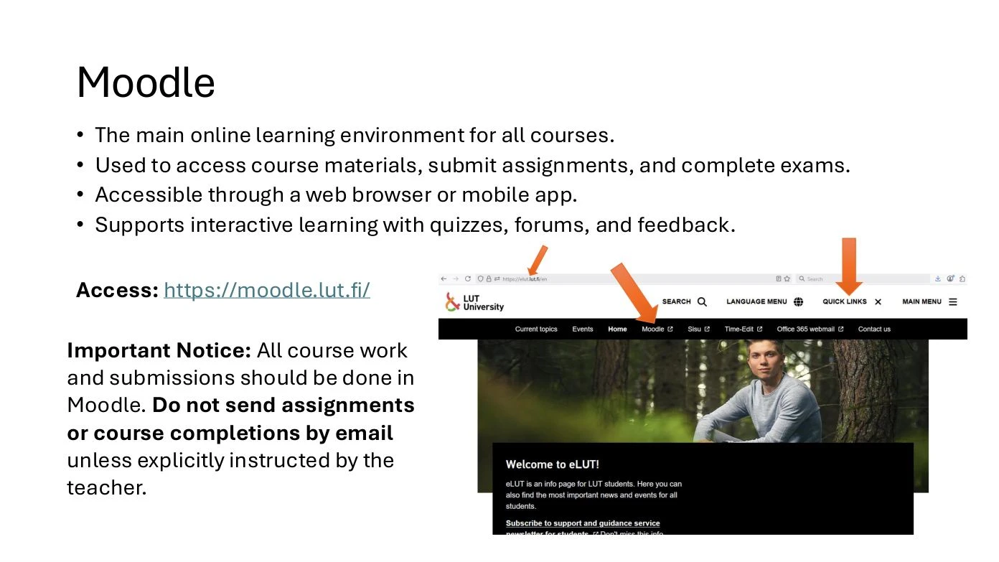
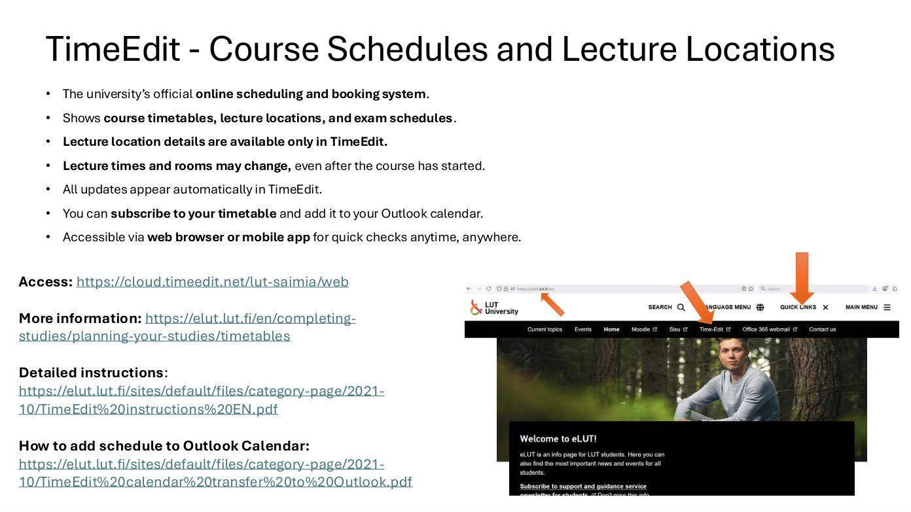
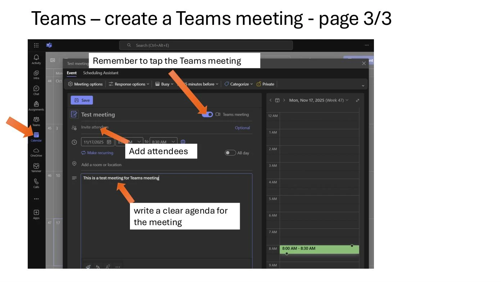

CT30A1000 学习工具与AI · 课程合订本
1 门课 / 3 章 / 6 讲，按「课程 → 章节」顺序连排；每章有标题，每讲之后可直接跳回独立页或章节页。适合通读、打印、离线放到手机里看。
CT30A1000 学习工具与AI
系统讲清 LUT 的学习工具链：eLUT 与十个入口、Office 365（Word/Excel/Copilot）、PowerPoint 演示、OneNote/Visio/Miro 绘图，以及 AI 生成音乐图像视频的合规边界；最后一讲把提示词技巧（人格化、上下文工程、思维链、少样本、反向提示、角色扮演）与课程成绩构成一起收口。 · 3 章 · 6 讲
第 1 章 学习工具与办公软件 2 讲 章节页 →
第 1 讲 · 学习工具与服务
Tools and Services for Studying 第 1 章 学习工具与办公软件
本讲定位
CT30A1000 的第一讲不教软件操作，而是先把“学校给你配了哪些系统、每个系统管什么”讲清楚。原因很实际：在 LUT，信息不是找不到，而是散在十个系统里；找错系统比不会用更浪费时间。
本讲按课件顺序讲十个入口：eLUT 与 Student IT Guide、LUT 邮箱、LUT Calendar、OneDrive、Teams、Zoom、Moodle、TimeEdit、LUTPub、Primo，并补上线上课堂的礼仪。第 2–6 讲分别深入办公软件、演示、绘图、AI 生成内容与 AI 学习方法。
学完本讲你应当能够：
- 说出“查课表 / 交作业 / 找论文 / 开会 / 存文件”各应打开哪个系统
- 用 LUT 邮箱与 DuoMobile 完成两步验证登录
- 在 Teams 里建课程频道并发起带议程的会议
- 按线上课堂礼仪参加 Zoom 讲座（摄像头、静音、举手、聊天）
- 用 Primo 与 LUTPub 找到一篇论文或一份学位论文
一、eLUT 与 Student IT Guide：所有入口的总入口
eLUT 是 LUT 学生的信息页：所有与学习有关的信息、新闻、活动都在这里；它有一个强力的搜索引擎用来找信息；首页给出最常用服务与工具的快捷链接（Quick links）；主菜单（Main menu）则链接到全部服务与工具。
主菜单下有一个关键分支：Student IT Guide → Study systems，那里放的是 IT 相关信息，以及“学生可用的学习工具怎么用”的说明。也就是说，eLUT 负责“告诉你有什么”，Student IT Guide 负责“教你怎么用”。
1.1 为什么必须用学校提供的工具
课件给了七条理由，逐条都指向成本与风险：使用同一套工具能避免混乱、省下配置时间；不必为了配合不同小组去学多个应用；小组作业在同一个系统上更顺畅；学校工具附带官方支持与指导；工具经过学校批准，并考虑了学生数据隐私；软件由学校付费，学生不用自己买；而替代工具或个人工具可能达不到学校的安全标准，从而把你的文件、个人数据或研究置于风险中。
1.2 eLUT 搜索怎么用才快
eLUT 的搜索引擎是找“规则类信息”的最快入口：考试说明、报名截止、IT 指南、表格模板都在里面。有效的做法是用“系统名 + 动作”做关键词，例如“TimeEdit calendar”“Sisu enrolment”“turnitin thesis”，而不是用一句自然语言提问。
如果搜索结果指向 Student IT Guide，就说明这是一条“操作说明”；如果指向某门课程页，就说明这是“课程特定规则”。两者的优先级不同：课程页的说明覆盖通用指南。
二、LUT 邮箱：官方通信的唯一通道
入口是 LUT 的 Outlook 网页版。用学生邮箱登录，格式为 firstname.surname@student.lut.fi，并配合 DuoMobile 两步验证（2FA）应用。关于 LUT ID 与登录的说明在 Student IT Guide 的 “LUT ID and signing in” 页面。
课件特别标注：教师与教职工只回复你用 LUT 邮箱发出的消息；用私人邮箱发的邮件不会得到回复，这是为了隐私与数据保护。还有一条容易被忽略：不要把学校邮件转发到私人邮箱地址。
三、LUT Calendar：把课表、会议与截止日放在一处
日历与邮箱是集成的：可以直接从 Outlook 邮件里安排事件与会议；可以设提醒，避免忘记任务或约会；可以把日历分享给同学，用于小组项目或与学习伙伴协调时间；与 Microsoft Teams 同步后，可以从日历一键加入线上课程或会议；手机、平板、电脑都能查看与更新；可以用颜色区分事件类型（例如课程、个人、截止日），让安排一眼可读。
对学生的用法建议：把四个作业截止、考试报名、12 月春季选课这些“只出现一次但后果严重”的日期全部建成全天事件，并设两周前与三天前两次提醒。
四、OneDrive：文件的主平台
OneDrive 是保存、访问与在线共享文件的主平台；与 Microsoft 365（Word、Excel、PowerPoint 等）集成；任何联网设备都能访问；是与教师和学校工作人员共享文档的主要方式；也推荐用于团队或学习小组内部共享。
课件列出的好处：自动备份——设备丢失或损坏时学习材料仍在；在任何设备（手机、平板、笔记本）上访问并同步文档、作业与演示；易于协作——与同学实时共享并共同编辑；用文件夹把课程作业、笔记与项目整理清楚；免费且安全的 5 TB 存储。
五、Teams：课程与项目的主场
Teams 是给学生与教师的沟通协作平台，属于 Microsoft 365，与 OneDrive、Word、Excel、PowerPoint 集成；把聊天、视频会议、文件共享与团队协作放在一处；桌面、手机、网页都能用；课件称它是“每个人都有的推荐协作工具”。
好处：与同学和教师即时聊天或开会；为课程或项目创建团队（team）与频道（channel）；共同编辑文档、共享文件、使用共享笔记；把对话、会议与文件都留在同一处；任何设备都能入会并获取材料。
5.1 频道、聊天与文件
课件第 2 页展示三件事：为小组作业与课程建立 Teams 频道；单独或分组聊天；发起新聊天；访问并共享文件。实践上的分工是：频道放“属于这门课/这个项目”的讨论与文件，聊天放临时的两人或小组对话。
5.2 发起一场会议
课件第 3 页的操作要点：点 Teams 会议（Tap the Teams meeting）；添加参会人；写清议程（agenda）。议程不是礼貌，它决定会议能否在 30 分钟内结束。
- 在课程频道里点“会议”，选时间
- 添加参会人（同学、教师）
- 在描述里写议程：每条对应一个决定或一个交付物
- 附上会前材料（文档、链接、上次会议记录）
- 会前 10 分钟测试麦克风与共享屏幕
六、Zoom：教师侧的线上课堂
Zoom 是教师用于线上讲座与会议的交互式视频会议工具；支持视频、音频、屏幕共享、聊天，以及标注（annotations）与分组讨论室（breakout rooms）等互动工具；加入会议不需要 Zoom 账号——教师会提供链接、会议 ID 与密码；可以通过浏览器、桌面客户端或手机应用参加（要完整功能建议用桌面客户端）。
加入步骤：提前安装 Zoom 客户端；点击链接或输入会议 ID 与密码（来自 Moodle 或教师）；也可以用浏览器加入，但部分功能受限；加入前测试扬声器与麦克风。
6.1 线上课堂礼仪
| 项目 | 讲座（lecture） | 会议（meeting） |
|---|---|---|
| 摄像头 | 发言、提问或小组工作时打开 | 通常应打开，以显示投入与专业 |
| 麦克风 | 轮到你说话前保持静音 | 同左 |
| 举手 | 发言前用 Raise hand，维持秩序、避免打断 | 同左 |
| 聊天 | 只用于相关问题或讨论，避免离题 | 同左 |
| 屏幕共享 | 即使不打算演示，也提前练习一次 | 同左 |
| 设备 | 会前测试耳机与麦克风 | 同左 |
七、Moodle：所有课程的学习环境
Moodle 是所有课程的主要在线学习环境：用它获取课程材料、提交作业、完成考试；浏览器或手机应用都能访问；支持测验（quizzes）、论坛（forums）与反馈等互动学习。
课件的 Important Notice 是一条纪律：所有课程作业与提交都应在 Moodle 完成；除非教师明确指示，不要把作业或课程完成情况用邮件发送。
八、TimeEdit：唯一权威的课表与教室
TimeEdit 是学校官方的在线排课与预约系统：显示课程时间表、上课地点与考试安排；上课地点的详细信息只在 TimeEdit 里给出；课程时间与教室可能变动，甚至开课之后也会变；所有更新会自动出现在 TimeEdit；你可以订阅自己的课表并加入 Outlook 日历；浏览器或手机应用都能随时查看。
九、LUTPub：学位论文与研究材料的仓库
LUTPub 是 LUT 的出版仓库：收录学士与硕士论文、licentiate 论文、博士论文以及摘要；也包含其他出版物、研究数据集、教学材料与演示资源；可以在线检索、阅读与下载。
课件的实用提示：LUTPub 是找论文题目灵感、潜在导师与相关研究的好地方。用法是先按关键词找近三年的硕士论文，看它们的目录结构与研究方法，再顺着参考文献找导师与课题组。
十、Primo：图书馆的一站式检索
Primo 是图书馆检索工具：提供对图书与电子书、文章、数据库等的一站式检索；记得先在右上角登录，登录后才能看到完整的可用资源与权限。
课件的 tip 很实用：在 Google Scholar 里显示为付费的文章，可能在 Primo 里可以免费获取；用标题或出版物编号去 Primo 搜。
10.1 Primo 的三种检索入口
Primo 支持三种入口，用途不同：关键词适合探索一个主题，先用宽词看有哪些文献；标题适合你已经知道要哪一篇；出版物编号（DOI、ISBN 或期刊卷期）最快命中唯一记录。检索不到时，先减少限定词（年份、语言、文献类型），再换编号；仍然不到，就换到 LUTPub 或去问图书馆员。
- 用引号把短语固定住，避免词被拆开检索
- 先宽后窄：先看结果量，再加年份与文献类型
- 结果页先看“在线访问”是否有全文，再看纸本馆藏位置
- 导出引用前核对作者、年份与期刊名，机器生成的引用常有小错
10.2 LUTPub 与 Primo 的分工
两个系统都“能搜到论文”，但覆盖范围不同：Primo 覆盖图书馆订购的图书、期刊与数据库，适合找期刊论文与教材；LUTPub 覆盖本校产生的学位论文、研究数据集与教学材料，适合找选题、看本校的研究方向与导师。找“别人怎么写这个题目”用 Primo，找“本校谁做过这个题目”用 LUTPub。
一个高效的顺序是：先用 Primo 找 3 篇综述建立框架，再用 LUTPub 找 2 篇本校硕士论文看结构与本地数据，最后回到 Primo 补齐引用。三步都做完，再动笔。
十一、十个入口怎么配合：四个真实闭环
| 场景 | 顺序 | 判断标准 |
|---|---|---|
| 今天上什么、在哪上 | TimeEdit → LUT Calendar → Moodle | 时间、教室、材料三者一致；教室以 TimeEdit 为准 |
| 交作业 | Moodle → OneDrive（附件）→ LUT 邮箱（仅沟通） | 作业在 Moodle 提交；邮件只用于问问题 |
| 找一篇论文 | Primo（先登录）→ LUTPub（学位论文） | 能下载全文，或找到可申请的馆藏 |
| 小组协作 | Teams 团队/频道 → OneDrive 文件夹 → Calendar 会议 | 文件在频道里，会议有议程，记录可追溯 |
十个入口不是清单，而是四条闭环：查课走 TimeEdit → Calendar → Moodle，交作业走 Moodle → OneDrive，找论文走 Primo → LUTPub，协作走 Teams → OneDrive → Calendar。最易混的是教室信息的唯一权威：Lecture location details are available only in TimeEdit。Moodle 给材料、邮件给沟通，都不给教室；课程页规则覆盖通用指南。
“老师没回邮件”常常不是忙，而是你用了私人邮箱——课件明确只回复 LUT 邮箱发出的消息，也别把学校邮件转发到私人地址。另一个隐蔽坑是 OneDrive 共享链接默认可能是“有链接即可编辑”：给教师改为 Can view，给小组才给 Can edit，含敏感材料勾选 Can't download。会议同理：写清 agenda 比寒暄更能让 30 分钟内结束。
| English | 中文 | 说明 / 例句 |
|---|---|---|
| eLUT | 学生信息门户 | The info page for LUT students: news, events, quick links to all services. |
| Student IT Guide | 学生 IT 指南 | Instructions on how to use the study tools and systems. |
| LUT ID | LUT 账号 | The account used to sign in to LUT services. |
| two-factor authentication (2FA) | 两步验证 | Sign-in requires DuoMobile in addition to the password. |
| OneDrive | 云盘 | The main platform for saving, accessing and sharing files; 5 TB for students. |
| Teams channel | Teams 频道 | A workspace inside a team for a course or project, with files and conversations. |
| agenda | 议程 | A written list of what a meeting must decide or deliver. |
| Zoom breakout room | Zoom 分组讨论室 | Small sub-meetings inside a Zoom session. |
| Raise hand | 举手 | A Zoom/Teams tool used before speaking to keep order. |
| Moodle | 在线学习平台 | The main online learning environment for materials, submissions and exams. |
| TimeEdit | 排课系统 | The official scheduling system; lecture locations appear only here. |
| LUTPub | 出版仓库 | Stores theses, dissertations, research datasets and teaching materials. |
| Primo | 图书馆检索 | One-stop search for books, e-books, articles and databases. |
| annotation | 标注 | Drawing on a shared screen during an online session. |
| subscription (calendar) | 日历订阅 | Adding a timetable feed to Outlook so updates appear automatically. |
第 1 步：打开 TimeEdit，看今天的课程块，记下时间、教室、课程代码。教室信息只在这里有，所以先看它。
第 2 步：打开 LUT Calendar，确认有没有与课程冲突的会议或截止提醒；如果课表有变动，把 TimeEdit 的新时间手动更新到日历（或确认订阅已同步）。
第 3 步：打开 Moodle 的课程页，看本周要交的作业与材料，确认提交入口是否已开放。
第 4 步：若课程是线上，回到 Calendar 点会议链接（Teams 或 Zoom），提前 5 分钟测试音频。
判断标准：三处信息一致（时间、地点、任务），且你知道“万一教室变了要去哪看”（TimeEdit）。
会前：提前安装 Zoom 客户端（浏览器版功能受限）；从 Moodle 或教师邮件拿到链接、会议 ID 与密码；测试扬声器与麦克风；把手机静音，准备好笔记位置。
入会：点链接或输入 ID + 密码；若被要求，输入显示名（用真名，便于教师识别）；加入后先静音。
会中：发言、提问或进入分组讨论时打开摄像头；用 Raise hand 再说话；聊天区只发与内容相关的问题；需要时用标注指出屏幕上的位置。
会后：把笔记存入 OneNote 或 OneDrive；如需提问，用 LUT 邮箱写给教师，主题写课程代码。
常见错误：用浏览器入会却发现不能分组；全程开麦导致回声；在聊天区发与课程无关的内容。
第 1 步：在 Teams 里为这门课建一个团队（或使用教师已建好的课程团队），再建一个频道，命名如 “Project report”。
第 2 步：在频道的“文件”标签里新建文件夹（如 01_outline、02_drafts、03_figures），把 Word 文档放在 02_drafts。
第 3 步：共享时给组员“可编辑”，给教师“可查看”；需要时关闭“可下载”。
第 4 步：在频道里发起会议，写清议程（本周要定大纲、分工、截止），并把会议记录置顶。
判断标准：任何人打开频道就能看到“最新版本在哪、谁负责哪节、下次什么时候开会”。
第 1 步：在 Google Scholar 记下论文标题与出版物编号（DOI 或期刊卷期）。
第 2 步：打开 Primo，先在右上角登录（不登录看不到完整权限）。
第 3 步：用标题或出版物编号检索；若显示有电子全文，直接下载；若只有纸本，记下馆藏位置与索书号。
第 4 步：若这是一篇学位论文，改到 LUTPub 按关键词检索，通常能直接下载 PDF，并用它顺藤找到导师与相关研究。
判断标准：你拿到的是全文而不是摘要；引用时记录 DOI 与访问日期。
- 列出“查教室、交作业、找论文、开小组会、存共享文件”分别该用哪个系统，并说明理由。
- 写出用 LUT 邮箱登录的两步验证流程，并解释为什么不能把学校邮件转发到私人邮箱。
- 设计一场 30 分钟小组会议的 Teams 议程（至少 4 项，每项对应一个决定或交付物）。
- 线上讲座中，你要在分组讨论里发言并在主会场提问。写出你会用到的 Zoom 功能与礼仪动作。
- TimeEdit 与 LUT Calendar 都能显示时间，为什么教室信息必须以 TimeEdit 为准？
参考答案与思路
1. 查教室 → TimeEdit（地点只在这里给出）；交作业 → Moodle（所有提交在 Moodle，除非教师明确指示）；找论文 → Primo（先登录，一站式检索）与 LUTPub（学位论文全文）；开小组会 → Teams（频道 + 会议 + 议程）；存共享文件 → OneDrive（与 Office 集成、5 TB、可设权限）。
2. 用 firstname.surname@student.lut.fi 登录 Outlook 网页版，密码之后再通过 DuoMobile 应用确认。不转发的原因：隐私与数据保护；转发后邮件离开了学校控制的通道，且教师只回复 LUT 邮箱，转发件容易丢上下文与附件权限。
3. 示例：0–5 分钟确认上次行动项；5–15 分钟定本周交付物与分工（决定：谁在周五前交哪一节）；15–25 分钟解决一个阻塞（决定：采用方案 A/B）；25–30 分钟定下次会议与记录人。每项都写“要决定什么”。
4. 分组讨论：用 breakout room 进入小组，打开摄像头与麦克风；回主会场后先静音，用 Raise hand 请求发言，被点名后再开麦；需要指屏幕时用 annotation；聊天区只写与问题相关的内容。
5. 因为 TimeEdit 是官方排课与预约系统，课程时间与教室的变动会自动更新在那里；Calendar 只是你个人的日程副本，订阅同步可能有延迟，手动添加的条目更不会自动改。
第一周系统配置清单
- 用 LUT 邮箱 + DuoMobile 完成首次登录，并在手机上配置邮件
- 把 LUT Calendar 加到手机，创建“课程 / 截止 / 个人”三种颜色
- 在 TimeEdit 订阅自己的课表，确认已出现在 Outlook 日历中
- 在 OneDrive 建“课程/学年/课程代码”三级文件夹
- 在 Teams 里找到本学期课程团队，打开通知
- 安装 Zoom 桌面客户端并测试麦克风、扬声器、屏幕共享
- 在 Moodle 打开每门课，确认作业入口与材料位置
- 在 Primo 登录一次，确认能下载一篇电子全文
- 在 LUTPub 检索一个自己感兴趣的主题，保存两篇论文
每次线上课前的五分钟检查
- 摄像头可用、背景整洁
- 麦克风默认静音，耳机已连接
- 知道 Raise hand 与聊天区在哪里
- 会前材料已下载到本地（防止共享时找不到）
- 会议链接来自 Moodle 或教师，而不是转发的旧链接
| 源文件 | 位置 | 覆盖内容 |
|---|---|---|
| Lecture 1 Tools and services for studying.pdf.txt | p2 | 课程标题与十个工具清单 |
| Lecture 1 Tools and services for studying.pdf.txt | p3–p4 | eLUT 与 Student IT Guide；为何使用学校工具；只回复官方平台消息 |
| Lecture 1 Tools and services for studying.pdf.txt | p5 | LUT 邮箱地址格式、DuoMobile 2FA、不转发到私人邮箱 |
| Lecture 1 Tools and services for studying.pdf.txt | p6 | LUT Calendar 的六项功能 |
| Lecture 1 Tools and services for studying.pdf.txt | p7 | OneDrive 的定义、五项好处、5 TB 存储 |
| Lecture 1 Tools and services for studying.pdf.txt | p8–p10 | Teams 的定义、好处、频道与聊天、发起会议与议程 |
| Lecture 1 Tools and services for studying.pdf.txt | p11–p12 | Zoom 的功能、加入方式、线上课堂礼仪 |
| Lecture 1 Tools and services for studying.pdf.txt | p13 | Moodle 的用途与“提交都在 Moodle”的规定 |
| Lecture 1 Tools and services for studying.pdf.txt | p14 | TimeEdit 的功能、地点只在此、变动自动更新、订阅日历 |
| Lecture 1 Tools and services for studying.pdf.txt | p15–p16 | LUTPub 收录范围与选题提示；Primo 登录与付费文章提示 |
| （跳过） | p1、p17 | 封面与结束空白页 |
| （补充） | — | 四个“真实闭环”、共享权限建议与第一周五分钟检查，属于基于原文功能的操作化整理 |
第 2 讲 · 办公软件与 AI（Word、Excel、Copilot）
Office Software and AI: Word, Excel and M365 Copilot 第 1 章 学习工具与办公软件
本讲定位
第 1 讲把“去哪找”讲完了，本讲讲“找到之后用什么写”。LUT 给每个学生配了完整的 Microsoft 365：Word、Excel、PowerPoint、OneDrive、Teams，以及 M365 Copilot。本讲只深入三个最常用的：Word（写作）、Excel（数据）、Copilot（AI 助手）。
学完本讲你应当能够：
- 用 Word 的样式与引用工具写出格式一致的长文档，并导出 PDF
- 按“可编辑 / 可审阅 / 可查看 / 不可下载”设置共享权限
- 用 Excel 做一张表、一个透视汇总与一张图表
- 判断 Copilot 能做什么、不能做什么（它不在 Word/Excel 里）
- 用 Copilot 建一个可重复使用的 Agent
一、Microsoft 365 在 LUT 是什么
它是一整套面向所有 LUT 学生的生产力工具：提供 Word、Excel、PowerPoint、OneDrive、Teams 与 Copilot AI；可在桌面、浏览器与手机上使用；文件通过 OneDrive 自动同步；支持实时协作与 AI 辅助的工作流；是经学校批准、可用于学习与研究的安全环境。
这句话里有两个容易被忽略的词：自动同步与安全环境。前者意味着你不需要“记得保存”，后者意味着你不应该把课程材料搬到未经批准的个人网盘。
二、Word：写作的主工具
Word 是写报告、论文、文档与学位论文的主工具：多数书面作业要求用它提交；它支持学术写作的引用与参考文献工具；支持实时协作编辑与评论，能保证小组作业与长文档的格式一致；内置样式、标题、引用与模板；与 OneDrive 完全集成，提供自动保存与版本历史；桌面、浏览器、手机都能用。
2.1 一个省时间的技巧：官方论文模板
课件给了一个非常实用的提示：用搜索工具在 eLUT 上找到官方且最新的 LUT 学位论文 Word 模板；这个模板稍作修改就能用于课程作业。它的价值在于：页边距、字体、标题层级、封面与参考文献格式已经符合学校要求，你只需要替换内容。
2.2 共享文档：四种权限
共享的步骤是：找到要共享的人，或直接输入邮箱地址；设置文档权限——可编辑（can edit）、可审阅（review）、可查看（view）、或不可下载（can’t download）；加一句消息说明这份文档是什么；“复制链接”会生成可分享的链接（记得同时设对权限）；“发送”会把链接与消息发给选定的人。
| 权限 | 对方能做什么 | 什么时候用 |
|---|---|---|
| Can edit | 直接改正文 | 小组共同撰写 |
| Review | 用修订/批注提意见，不直接改 | 请同学或教师评审 |
| View | 只能看 | 发给教师确认进度 |
| Can’t download | 能看但不能下载 | 含敏感或个人数据的材料 |
2.3 导出 PDF
操作只有四步：打开 File 菜单 → 选择 Export → Download as PDF → Word 弹出 “Your document is ready” 对话框后按 Download。导出前先检查三件事：目录页码是否更新、图表编号是否连续、字体是否被替换。
2.4 长文档靠三件事维持秩序
第一，样式驱动结构：标题 1/2/3 用样式而不是手动加粗，目录与编号才会自动更新；第二，分节符控制页眉页脚：封面、目录、正文各一节，页码从正文重新开始；第三，版本历史：OneDrive 会保留旧版本，改坏了可以回到上一版，不必靠“final_v2”这种文件名。
2.5 协作冲突怎么处理
两人同时改同一段时，Word 会保留双方的修订。处理顺序是：先看版本历史确认谁改了什么，再逐条接受或拒绝；评审阶段统一用 Review 权限收意见，定稿阶段只留一个人有编辑权。这一步能避免“最后一份文件是谁的”这种典型小组事故。
2.6 为什么用链接而不是附件
把 Word 文件作为附件发给五个人，你会得到五个版本；发共享链接，只有一份文件。课件强调 OneDrive 是“与教师共享文档的主要方式”，原因就在这里：链接指向同一份真源，权限可以随时收回，版本历史可以追溯。
判断标准很简单：需要对方改，给可编辑链接；需要对方看，给只读链接；需要对方评，给 Review 链接。附件只用于“必须留一份不可改的快照”，例如提交到 Moodle 的最终 PDF。
2.7 引用工具到底替你做了什么
Word 的引用与参考文献工具做三件事：把你输入的来源（作者、年份、标题、出版信息）存成一条记录；在正文插入引用标记；在文末按选定样式自动生成参考文献列表。它的价值不是“帮你查资料”，而是“保证正文标记与文末条目一一对应，并且在改动顺序后自动重排”。
因此有两个操作纪律：来源信息必须自己核对（工具不会验证真伪）；样式一经确定就全文统一，不要手工改某一条的格式，否则自动重排会把它改回去。
课程报告常见的要求是“正文有引用、文末有列表、格式统一”。三者都做到，才算“按学术格式报告”——这正是本课程学习成果里的一条。
三、Excel：数据、计算与图表
Excel 能做的事：创建与编辑表格、计算与结构化数据；用公式、函数与透视表（pivot tables）分析数据；用图表把信息可视化；通过 OneDrive 实时协作编辑；使用预算、计划、数据跟踪等模板；尤其适合实验报告、研究数据、统计与项目工作。
课件还给了一句很坦诚的建议：请通过搜索网上适合自己学习风格的教程来掌握 Excel 基础。换句话说，课堂不讲函数语法，但作业会用到。
3.1 从数据到图表
课件给的四步是：选 Insert 选项卡 → 选中数据 → 选图表类型（示例用的是饼图 Pie chart）→ 右键点图表并选 Format 进行编辑。
- 把原始数据整理成“一行一条记录、一列一个字段”的规范表
- 选中数据区域（含表头）
- Insert → 选择图表类型（比较用柱状、趋势用折线、占比用饼图）
- 右键图表 → Format，改标题、坐标轴、数据标签
- 把图表复制到报告时，保留数据来源与单位
3.2 三个最基本的计算
课件只要求会用公式、函数与透视表，没有列具体函数。作为操作补充（非课件原文），学生最常用的是三个：SUM 求和、AVERAGE 求平均、COUNTIF 条件计数（例如统计不及格人数）。它们的共同前提仍是规范表：一行一条记录、一列一个字段。
写公式时用单元格引用而不是手打数字，表格增删行后结果才会自动更新；做完后用一两个手算结果抽查，避免整列引用错位。
3.3 透视表的四步
透视表的价值是把几百行数据压成几张汇总。四步是：选中规范表 → Insert → PivotTable → 在字段面板把字段拖到四个区域：行（分类维度）、列（第二维度）、值（要计算的数字，默认求和，可改为平均/计数）、筛选（用于切片）。
常见错误是“值”区放了文本字段，结果只能计数；或行区放了唯一值（如姓名），汇总等于没汇总。判断标准：透视后的行数应明显少于原始行数，否则说明维度选错了。
四、M365 Copilot：AI 助手，但不在 Word/Excel 里
Copilot 是 AI 助手，有网页版与手机应用；帮做通用任务：写作、总结、解释、头脑风暴；能生成文本、想法、大纲、邮件与学习笔记；适合做规划、调研与理解复杂主题；它与 Office 工具并肩工作，但并不直接在 Word/Excel 里面；用 LUT 账号可以使用免费版。
它能帮你做的事（课件清单）：总结长文档或文章；重写或改进你的文本；为项目或作业生成想法；创建解释、示例、图表或清单；准备邮件、报告或学习计划。
4.1 怎么用：聊天与“+”号
打开 Copilot 后，在 AI Chat 里直接打字或说话即可；它能读取并分析不同类型的文档与文件；用 “+”号可以把内容加给它——从你的电脑，或从 OneDrive 云端。
4.2 Copilot Agents：把重复的指令变成助手
Agent 是可定制的 AI 助手，你可以创建一个来重复或自动执行特定任务。它的意义是：不必每次都给同样的指令，而是建一个记得自己角色、目标与规则的助手。
创建步骤：直接输入你的想法，或浏览现成的 Agent；Copilot 会引导你完成流程；在配置页可以修改，或从零创建你想要的 Agent；技巧是看看现成 Agent 是怎么做的，从中学；如果卡住，就问 Copilot 下一步怎么做。
4.3 给 Copilot 的提示词写成四段
可复用的结构是：角色（你是谁、按什么标准判断）→ 任务（要产出什么）→ 上下文（课程要求、受众、已有材料，用 + 号上传）→ 输出格式（几段、多长、要不要清单）。四段齐全，产出才稳定；缺哪一段，就等着返工哪一部分。
- 角色：Act as a thesis supervisor in software engineering.
- 任务：Review Section 3 and list three weaknesses with locations.
- 上下文：上传课程评分标准与本节草稿。
- 格式：A table with columns Issue / Location / Suggested fix, max 8 rows.
4.4 Copilot 的三种安全用法与三种危险用法
安全用法：让它解释一段你没读懂的方法；让它按评分标准列出你草稿的薄弱点；让它把长表格改写成三行摘要（你再核对数字）。这三种都发生在“你已经有一份自己的工作”之后。
危险用法：让它直接写出你还没想的结论；让它生成参考文献（极易编造）；让它把整段英文改写成“看起来专业”的句子而你无法核对。判断标准仍是第 6 讲那条：用完能不能脱稿讲出来。
4.5 把 Copilot 的产出搬进文档的三条路径
第一条是复制文本：适合短清单与提纲，粘进 Word 后必须套用本文章的样式，否则字体会突然变样。第二条是让 Copilot 生成文件再下载：适合表格与演示骨架，下载后放在 OneDrive 同一文件夹，避免出现“桌面版”和“云端版”两个真源。
第三条是手工转录：听起来最笨，但对“必须自己负责的结论”最安全——你读一遍、写一遍、核一遍，错误会在这一步暴露。三种路径可以混用：骨架用第二条，措辞用第一条，结论用第三条。
五、三个工具如何配合：一份报告的流水线
| 阶段 | 工具 | 产出 |
|---|---|---|
| 收集与整理数据 | Excel | 规范表、透视汇总、1–2 张图表 |
| 列提纲与写初稿 | Word（可用 Copilot 生成提纲） | 带标题层级的草稿 |
| 排版与引用 | Word 样式 + 引用工具 + 官方模板 | 格式一致的正文与参考文献 |
| 评审与修改 | Word 共享（Review 权限）+ 评论 | 带批注的版本 |
| 提交 | Word → Export → PDF；Moodle 提交 | PDF 文件 |
为什么用链接而不是附件？发五个人附件就得到五个版本，链接只指向一份真源，权限可收回、版本历史可追溯。由此推出三种判据：要对方改给 Can edit，要对方评给 Review，要对方看给 View；附件只留给提交 Moodle 的最终 PDF。长文档用样式而非手动加粗，目录与编号才会自动更新，改坏还能回退。
最大的工作流误解是以为 Copilot 嵌在 Word/Excel 里能“点一下改全文”——课件明确它 works alongside, not inside，产出要自己搬进文档。其次别把它当事实来源：它不知道你的评分标准，也常编造参考文献。提示词写成四段——角色（Act as a thesis supervisor）、任务、上下文（用 + 号上传评分标准）、输出格式。
校园版 Copilot 分两种入口：网页聊天（带商业数据保护）输入不会被用于训练模型，Office 内嵌只处理你当前文档。红线是：任何时候不要把他人个人数据（同学作业、成绩单、身份证件）贴进任何 AI 工具——这受 GDPR 与学校政策双重约束。小组项目里用 AI 生成初稿没问题，但提交前要能逐句解释内容（老师会当面问）。
| English | 中文 | 说明 / 例句 |
|---|---|---|
| Microsoft 365 | 微软 365 套件 | Word, Excel, PowerPoint, OneDrive, Teams and Copilot for all LUT students. |
| style | 样式 | A named set of formatting rules applied to headings and body text. |
| heading level | 标题层级 | H1/H2/H3 structure that also feeds the table of contents. |
| citation tool | 引用工具 | Built-in Word feature for references and bibliographies. |
| version history | 版本历史 | OneDrive keeps older versions so you can restore them. |
| document privileges | 文档权限 | Can edit, review, view, or can’t download. |
| collaboration | 协作 | Real-time co-editing and commenting in Word and Excel. |
| export as PDF | 导出 PDF | File → Export → Download as PDF. |
| pivot table | 透视表 | Summarises large tables by rows, columns and values. |
| chart type | 图表类型 | Pie for proportions, bar for comparison, line for trends. |
| M365 Copilot | 微软 Copilot | AI assistant in web and mobile apps; works alongside, not inside, Word/Excel. |
| prompt | 提示词 | The instruction you give the AI; output quality reflects input quality. |
| Copilot Agent | Copilot 智能体 | A reusable assistant that remembers its role, goals and rules. |
| free version | 免费版 | Available with a LUT account. |
| OneDrive sync | OneDrive 同步 | Files sync automatically across devices. |
第 1 步：在 eLUT 搜索并下载最新的 LUT 学位论文 Word 模板；另存为课程报告文件名，放在 OneDrive 的课程文件夹。
第 2 步：用模板自带的标题样式写章节（不要手动加粗改字号）；写完后更新目录，检查页码。
第 3 步：用引用工具插入参考文献；正文中的引用与文末列表要能一一对应。
第 4 步：插入 Excel 生成的图表，统一图注编号（Figure 1、Figure 2）。
第 5 步：File → Export → Download as PDF；打开 PDF 检查分页、字体与图表清晰度。
判断标准：目录页码正确、图表编号连续、字体未被替换、参考文献格式统一。
在 Word 里点共享，输入教师邮箱；权限选 Review（可提批注与修订，但不能直接改正文）；消息里写“Please review Section 2–3 by Friday; comments only, I will apply the changes.”；发送链接。
为什么这样选：教师需要能标注问题，但不需要改动你的正文；你保留修改权，版本不会被两个人同时改乱。
如果对方只是要看进度，选 View；如果材料含访谈原文或个人信息，勾选 can’t download。
把数据整理成两列（例如“温度 / 产率”），第一行是表头；选中整个区域（含表头）；Insert → 选择散点图或折线图；右键图表 → Format，改坐标轴标题与单位，加上数据标签。
若要按组汇总，先插入透视表：行放“组别”，值放“产率”的平均值；再用透视结果做柱状图。
常见错误：把单位写进单元格（“25 °C”变成文本，无法计算）；表头有合并单元格；图表没有轴标题，读者不知道数字含义。
第一次（聊天）：给 Copilot 一段上下文：“I have a 6-lecture course on study tools and AI; exam in 12 days; I can study 90 minutes on weekdays and 3 hours on weekends. Build a day-by-day plan with active recall tasks, and list what to skip if I fall behind.”
第二次（Agent）：把这段需求变成 Agent 的角色与规则——“You are my study planner for CT30A1000. Always ask for my available hours first, then produce a day-by-day plan with active recall and a fallback plan.” 之后每次只需说“update my plan”。
注意：计划里的课程内容必须回到 Moodle 与课件核对；Copilot 不在 Word/Excel 内，产出要自己复制到文档；提交作业时按课程要求写 AI 声明。
- 写出 Word 中“可编辑 / 可审阅 / 可查看 / 不可下载”四种权限各自适用的场景。
- 把一份 30 页的 Word 文档导出为 PDF，列出导出前必须检查的三件事。
- 给定一张“班级 / 姓名 / 成绩”的表，说明如何用透视表算出每班平均分，并选一种合适的图表。
- Copilot 能做什么、不能做什么？各写三条，并说明“不在 Word/Excel 内”对工作流的影响。
- 设计一个用于“每周检查作业格式”的 Copilot Agent：写出它的角色、目标与三条规则。
参考答案与思路
1. Can edit：小组共同撰写；Review：请教师或同学提意见但不改正文；View：只让对方看进度；Can’t download：含个人信息、访谈原文或未公开数据的材料。
2. 检查目录与页码是否更新、图表编号与交叉引用是否连续、字体与页边距是否被替换；另外确认 PDF 里图片清晰、没有空白页。
3. 选中整表 → Insert → PivotTable；行放“班级”，值放“成绩”并设为平均值；图表选柱状图（比较各班），不用饼图（饼图适合占比）。
4. 能：总结长文、改写、生成想法/提纲/清单、准备邮件与计划、读文件（用 + 号加文件）。不能：直接在 Word/Excel 内部改文档、保证事实正确、替代你自己的核对与判断。影响：需要在 Copilot 与 Office 之间复制粘贴，产出要人工校对后再进文档。
5. 角色：“You are a formatting checker for LUT course reports.” 目标：“Find formatting inconsistencies against the official template.” 规则：①只列问题与位置，不改写内容；②按“标题层级 / 图表编号 / 参考文献 / 页边距”四类输出；③不确定时标注“needs human check”。
写报告前
- 已从 eLUT 下载最新官方 Word 模板
- 文档已存在 OneDrive 课程文件夹（自动保存已开）
- 标题使用样式而非手动加粗
- 引用工具已设置为课程要求的引用格式
- 图表在 Excel 中生成，编号规则已确定
共享与提交前
- 共享权限按对象设置（教师 View/Review、组员 Edit）
- 共享消息写清“这是什么文件、需要对方做什么、什么时候”
- 版本历史中能看到今天的修改记录
- 导出 PDF 后逐页检查分页与图表
- 在 Moodle 提交的是 PDF（若课程要求）
- 按课程要求写了 Declaration of AI usage
用 Copilot 时
- 提示词里给了角色、任务、受众、格式与限制
- 上传的是必要文件（用 + 号从电脑或 OneDrive）
- 对产出逐条核对事实与引用
- 没有把 Copilot 产出直接当作自己的分析提交
| 源文件 | 位置 | 覆盖内容 |
|---|---|---|
| Lecture 2 Office software and AI.pdf.txt | p3 | Office 365 的组成、跨平台、OneDrive 同步、安全环境 |
| Lecture 2 Office software and AI.pdf.txt | p4 | Word 的定位、引用工具、协作、样式与模板、版本历史、论文模板提示 |
| Lecture 2 Office software and AI.pdf.txt | p5 | 共享文档的步骤与四种权限 |
| Lecture 2 Office software and AI.pdf.txt | p6 | 导出 PDF 的四步与 “Your document is ready” 对话框 |
| Lecture 2 Office software and AI.pdf.txt | p7–p8 | Excel 的用途、透视表、模板；Insert → 选数据 → 选图表 → Format |
| Lecture 2 Office software and AI.pdf.txt | p9–p10 | Copilot 的定义、能力清单、免费版、AI Chat 与 + 号加文件 |
| Lecture 2 Office software and AI.pdf.txt | p11 | Copilot Agents 的定义与创建步骤 |
| （跳过） | p1、p12 | 封面与结束空白页 |
| （补充） | — | “报告流水线”的五阶段与导出前检查项，属于基于原文功能的流程化整理 |
第 2 章 演示与设计工具 2 讲 章节页 →
第 3 讲 · 演示工具与 AI
Presentation Tools and AI 第 2 章 演示与设计工具
本讲定位
第 2 讲解决“写”，本讲解决“讲”。课件把演示拆成三件事：做出幻灯片（PowerPoint）、设计好幻灯片（结构、简洁、一致、可读）、以及现场讲好（讲稿、计时、设备）。最后还演示了用 M365 Copilot 直接生成一份 pptx。
学完本讲你应当能够：
- 按“引言—要点—结论”的结构在 10 分钟内讲清一个项目
- 用模板、字号、留白与图表把一页幻灯片的信息量控制在可读范围
- 用 Speaker Notes 写讲稿，并做一次带计时的彩排
- 完成现场技术检查：投影、声音、翻页器、屏幕共享
- 判断 Copilot 生成的演示需要改什么、声明什么
一、PowerPoint 是什么
PowerPoint 用来制作含文字、图片、图表与多媒体内容的幻灯片（slide decks）；提供专业版式的模板；可以整合 Word、Excel 与 OneDrive 的内容；可以与同学或教师实时协作。
它在学习中的四个作用（课件原文）：清晰、专业地呈现想法；总结研究、项目或作业；为口头报告提供视觉辅助；为学术与职业场景做准备。
1.1 一页幻灯片的三件套
把每页拆成三件套，设计就有了抓手：标题写结论（一句完整的话）、证据放一张图或一组数字、落点用一行字说明“所以呢”。三件套齐全，听众不需要你念稿也能读懂这一页。
如果一页里有两张图、三段文字、四个颜色，说明你想讲两个观点。拆成两页，或者把次要内容移到附录——附录不是浪费，它让你在被追问时有东西可翻。
1.2 从报告目录到幻灯片结构
最省力的做法不是“重新想一套结构”，而是把报告的目录映射过来：引言对应“问题与动机”，方法对应“我们怎么做”，结果对应 2–3 页证据，讨论对应“局限与下一步”，结论对应最后一页。映射完再删：报告里为评审写的细节（参数、推导、完整表格）在演示里通常只需要一句结论加一个附录入口。
映射的好处是内容不会漏，页数也不会失控：一份 6 章的报告大约对应 9–12 页演示，超过 15 页通常说明你把附录搬上了台。
1.3 幻灯片的“可读距离”
判断字号够不够，不必猜磅数：把幻灯片缩到 40% 左右看屏幕，如果标题仍能读出、正文仍能辨认，投影到教室后排通常也能看清。缩到 25% 就完全糊掉的，现场一定看不清。
这个测试同时能测出信息量：缩略图状态下每页只剩标题与一块图像，说明结构清楚；缩略图里仍是一片文字，说明你还停留在“文档”而不是“演示”。
二、设计好幻灯片：七条规则
课件的七条规则几乎覆盖了学生演示的所有扣分点：
- 有清晰的结构与逻辑流：引言、主要观点、结论。
- 幻灯片保持简洁，用短句或要点，而不是整段文字。
- 用图片、图表、示意图或图标支持你的观点。
- 统一使用同一套模板、颜色、字体与版式。
- 文字易读：字体清晰、字号足够大。
- 减少干扰：避免过多动画、切换效果与堆砌。
- 为图片、数据与引用标注来源，保持可信度。
2.1 字号与信息量的经验规则
课件要求“可读的字体与足够的字号”，但没有给具体数字。可操作的做法是：正文不小于 20–24 pt，标题不小于 28–32 pt；每页不超过 6 行、每行不超过约 10 个词；图表只保留支撑结论的那一条信息，其余移入附录。这些是从“简洁 + 可读”两条规则推出的操作标准，不是课件原文。
2.2 图表怎么选
课件要求“用图片、图表、示意图或图标支持观点”，选错图表会让观点变模糊。操作规则是：比较大小用柱状图，看趋势用折线图，看占比用饼图（类别不超过 5 个），看两个变量的关系用散点图，看流程用流程图。
无论选哪种，只保留支撑结论的那一条信息：删掉网格线、删掉图例中不用的系列、把要强调的那根柱子换颜色。图表不是数据的展览，是论点的证据。
2.3 套用官方模板而不破坏版式
拿到 Copilot 或旧文档的内容后，不要直接整页粘贴。正确顺序是：先在官方模板里新建页，选择对应版式（标题页、标题+内容、两栏、图表页），再把内容以纯文本粘进占位框，最后用模板的主题字体与颜色重新排版。
这样做的原因是：直接粘贴会把原文档的字体、行距、项目符号一起带进来，后面每一页都要手工修；用占位框则一次成型。判断标准是“改完全部页后，字体面板里只出现模板规定的两种字体”。
三、讲好：六条与三个技术检查
课件给的六条：用关键观点、例子或故事吸引听众；幻灯片是支持你的讲述，不是复述你要说的话；用 Speaker Notes 引导讲述，同时不把幻灯片塞满；按听众的水平与兴趣调整内容；练习讲述以控制时间与建立信心；提前测试技术设置。
技术检查三项：练习屏幕共享；测试投影仪、声音与遥控翻页器（remote clicker）；练习如何使用 Speaker Notes。
| 准备项 | 检查什么 | 失败后果 |
|---|---|---|
| 屏幕共享 | 能否只共享窗口、字体是否可读 | 听众看到通知或看不清代码 |
| 投影与比例 | 16:9/4:3、颜色是否发白 | 图表变形、深色背景看不清 |
| 声音 | 视频音量、麦克风 | 开场十分钟在调设备 |
| 翻页器 | 电池、连接、下一页键 | 讲到一半要回电脑按键 |
| Speaker Notes | 是否在演讲者视图可见、字号够大 | 现场低头看稿、失去眼神交流 |
3.1 现场讲述的三个动作
讲述时可以只用三个动作控制节奏：指（说到图表的某一点时用手或指针明确指过去）、停（说完结论后停两秒，让听众消化）、问（在过渡处抛一个问题，把注意力拉回你身上）。三个动作都不需要额外准备，但能显著减少“念幻灯片”的感觉。
如果紧张，把第一页的前三句写进 Notes 并背下来。开场稳住了，后面通常就顺了。
3.2 线上演示与线下演示的差别
线上演示多两个变量：共享方式与延迟。共享整个屏幕会把通知、私聊、桌面文件暴露给听众；共享单个窗口更安全。切换窗口时会有 1–2 秒延迟，所以每次切换前先说一句“接下来看第二张图”，让听众知道画面要变。
线下演示多两个变量：光线与距离。投影会把深色背景与细线冲淡，正文对比度要比在笔记本上看到的更高；后排距离决定字号，最后一排能看清的最小字号就是你的下限。
两种场景的共同点是：都要提前到场测试。课件把“测试技术设置”列为讲好的第六条，不是可选项。
四、在 LUT 找到 PowerPoint 与官方模板
PowerPoint 从 Office 365 进入，也可以从 M365 Copilot 侧进入；LUT 提供官方模板（Official LUT Templates），用于课程与学位演示，能保证配色、字体与标志符合学校规范。
使用官方模板的额外好处：模板已经处理好标题层级与占位框，你把内容填进去即可，不必从空白页调格式。
五、放映、讲稿与录制
课件的界面示意标出三处：Speaker Notes（讲稿区）、Start slide show（开始放映）、Presentation tools（演示工具，如指针、标注、放大）。
还有一个常被忽略的能力：桌面版可以录制演示，并把录制导出为视频。用途包括：提交“录播式”作业、提前彩排看自己的语速与口头禅、给不能到场的组员看。
- 在 Speaker Notes 里写“每页 3 句”：结论、证据、过渡
- 用 Start slide show 进入演讲者视图，确认 Notes 可见
- 用手机计时完整讲一遍，记录每页实际用时
- 回看录制，删掉重复词与口头禅
- 按 80% 的时间余量准备（10 分钟的报告准备 8 分钟内容）
5.1 演讲者视图里的三块信息
放映时的演讲者视图通常给三块信息：当前页、下一页预览、Speaker Notes。它的价值是让你在看观众的同时知道下一句讲什么；练习时要专门练“看一眼 Notes 就抬头”的动作，而不是低头念完。
5.2 录像回看检查什么
回看录制时只看四项：语速（是否越讲越快）、填充词（嗯、那个、然后）、页面切换（是否在讲完前就翻页）、时间分配（前 3 页是否占了 40% 的时间）。每项记一个具体数字，下次才有改进目标。
5.3 排练的时间安排
一次 10 分钟的演示，至少排三遍：第一遍不看时间，只求讲完，记录每页卡住的地方；第二遍计时，标出超时的页；第三遍只练超时页与被追问的三个问题。三遍的总投入约 40 分钟，比临场加快语速有效得多。
组队演示还要多一遍“交接排练”：谁讲完把话交给谁、翻页由谁负责、两人之间不重复内容。交接不顺，听众会立刻感觉到团队没准备。
5.4 录制演示的三种用途与一个边界
三种用途：给自己回看语速与填充词；给缺席的组员补看；作为“录播式”作业提交。桌面版可以直接录制并导出视频，这比用手机拍屏幕清晰得多。
一个边界：录制会同时拍下画面与声音，如果画面里有同学的头像、聊天窗口或未公开的数据，导出前要确认对方同意，必要时只共享幻灯片窗口再录。
六、用 M365 Copilot 生成一份演示
课件的流程是：开始一个新的 chat（Start a new chat）；写一段描述性的提示词（descriptive prompt），说明你要做什么主题的演示；并要求它以 pptx 文件提供下载；生成后会给出一个可下载的链接（Downloadable link to the presentation that was generated）。课件注明使用的是 GPT-5。
提示词里至少要写清五件事：主题与目的、听众（同学/教师/企业）、时长与页数、必须包含的内容（数据、案例、结论）、格式要求（语言、模板、是否需要讲稿）。
八、问答与突发情况
演示的最后一分钟往往决定印象。课件没有展开问答，但可以用它的两条原则推导：幻灯片是支持而不是讲稿，所以问答时不要回去翻页找答案；为图片与数据标注来源，所以被问“这个数字哪来的”时能立刻答出出处。
- 准备三个最可能被问的问题，各写一句答案与一个证据
- 被问到不会的，先说“我没有这个数据”，再说“我会在什么时候补给你”
- 设备故障时切到 PDF 备份，并口头继续讲结论
- 超时被提醒时，直接跳到结论页，不解释“我还有几页”
七、一次 10 分钟项目汇报的完整设计
| 页 | 内容 | 目标 |
|---|---|---|
| 1 | 标题、姓名、项目名、日期 | 让人知道这是谁讲的什么 |
| 2 | 问题与动机（一张图或一个数字） | 30 秒内建立“为什么值得听” |
| 3 | 目标与范围（做了什么、不做什么） | 避免听众期待错位 |
| 4–6 | 方法、实现、关键结果（每页一个观点） | 用证据支撑结论 |
| 7 | 演示或截图（可选） | 让抽象结果可感知 |
| 8 | 局限与下一步 | 显示判断力 |
| 9 | 结论（一句话）+ 致谢/提问 | 留下可记住的句子 |
最省力的结构设计不是重新构思，而是把报告目录映射过来：引言→问题与动机，方法→我们怎么做，结果→2–3 页证据，讨论→局限与下一步，结论→最后一页。6 章报告约对应 9–12 页演示，超过 15 页通常说明把附录搬上了台。映射后每页压成三件套：标题写一句完整结论、证据放一张图或一组数字、落点写一行“所以呢”。
课件把“Use slides to support what you say, not to repeat it”列为讲好的关键：幻灯片不是提词器。Speaker Notes 只写三行——让人记住什么、支撑它的证据、过渡到下一页的话；念整页正文是最大失分点。另一个常被忽略的能力是桌面版可录制并导出视频：按 80% 时间余量准备（10 分钟报告备 8 分钟内容），回看只查语速、填充词、页面切换、时间分配四项。
| English | 中文 | 说明 / 例句 | |
|---|---|---|---|
| slide deck | 幻灯片组 | The full set of slides for one presentation. | |
| template | 模板 | A predefined layout, colour and font set; LUT provides official templates. | |
| placeholder | 占位框 | Boxes in a layout where text, images or charts go. | |
| speaker notes | 演讲者备注 | Notes visible to the presenter, not to the audience. | |
| slide show | 放映 | The full-screen presentation mode. | |
| presentation tools | 演示工具 | Pointer, annotation and zoom tools available while presenting. | |
| transition | 切换效果 | Animation between slides; use sparingly. | |
| animation | 动画 | Movement of objects within a slide; avoid clutter. | |
| screen sharing | 屏幕共享 | Sharing a window or screen in an online presentation. | |
| remote clicker | 遥控翻页器 | A device to change slides away from the laptop. | |
| record presentation | 录制演示 | The desktop version can record and export the presentation as video. | |
| pptx | audience | 演示文件格式 | The PowerPoint file format Copilot can provide for download. |
| audience | 听众 | The people the presentation is tailored to. | |
| logical flow | 逻辑流 | Introduction, main points, conclusion. | |
| citation of visuals | 图表来源标注 | Credit the source of images, data and quotes. |
第 1 步：先写结论句（一句话），再倒推需要哪三组证据；报告里的方法细节只留一页，其余进附录。
第 2 步：按第七节的结构排页：标题、问题、目标、方法、结果 2–3 页、演示、局限、结论。
第 3 步：每页只留一个观点：标题写成完整句子，正文最多 6 行；把长段落改成图或表。
第 4 步：统一模板与字号（正文 ≥20–24 pt），给每张图标注来源。
第 5 步：在 Speaker Notes 写“结论—证据—过渡”三句，计时讲一遍；超过 10 分钟就删页，而不是加快语速。
每页 Notes 只写三行：这一页要让人记住什么（一句）、支撑它的证据（一个数字或一张图）、过渡到下一页的话（一句）。
例如结果页：“记住返工率从 18% 降到 6%——证据是这三周的缺陷数——接下来讲我们怎么做到的。”
好处：不背整段文字，现场可以看听众反应调整；忘词时看一眼三行就能接上；也便于组员轮流讲同一份稿。
提示词：“Create a 10-slide presentation (pptx) for a 10-minute course project demo. Audience: teacher and classmates. Topic: our library-loan system. Include: problem, scope, architecture diagram, three results with numbers, limitations, next steps. Use short bullet points, English, and leave space for a LUT template.”
拿到文件后：套用 LUT 官方模板；把示例数据换成自己的真实数据并补来源；把架构图重画成自己能讲清的样子；删掉多余页；在 Notes 写三行讲稿。
合规：按课程要求声明使用了 Copilot（生成骨架/初稿），并说明你改写了哪些部分。
① 打开投影，确认比例与颜色；② 播放一段含声音的视频，确认音量；③ 连上翻页器，测试下一页与黑屏键；④ 用演讲者视图确认 Notes 可见；⑤ 若线上，测试屏幕共享（只共享窗口）与麦克风；⑥ 准备一份 PDF 备份，防止字体或版本问题。
判断标准：你能在不看电脑的情况下翻页、看 Notes、切到视频再切回来。
- 把一份 20 页报告压成 8 页演示：写出每页的标题句（完整句子，不是名词）。
- 列出设计幻灯片的七条规则，并指出你自己最常违反的两条。
- 说明 Speaker Notes 与幻灯片正文的分工，并给一页写三行示例。
- 用 Copilot 生成演示的提示词必须包含哪五类信息？各举一例。
- 现场演示前必须测试哪五项？分别说明失败后果。
参考答案与思路
1. 示例标题句：“现有借阅流程平均耗时 4 分钟”“我们把查询与续借合并到一步”“测试组把错误率降到 2%”“剩余风险是并发借同一本书”“下一步接入校园卡”。
2. 七条见正文；最常见的两条是“幻灯片写成整段文字”与“模板/字号不统一”。
3. 正文给听众看（短句、图、数字）；Notes 给讲者看（结论、证据、过渡）。示例：“记住：返工率 18%→6%。证据：三周缺陷数。过渡：接下来讲做法。”
4. 主题与目的、听众、时长与页数、必须包含的内容、格式要求（语言/模板/讲稿）。
5. 屏幕共享（共享错窗口）、投影与比例（图表变形）、声音（视频无声）、翻页器（无法翻页）、Speaker Notes（看不见稿）。
做幻灯片
- 已确定一句话结论，并倒推出三组证据
- 每页标题是完整句子，正文不超过 6 行
- 使用同一套模板、字体与字号（正文 ≥20–24 pt）
- 图片、数据、引用都标了来源
- 动画与切换只保留必要的
- 长内容移入附录而不是硬塞
讲之前
- 每页 Speaker Notes 写了结论、证据、过渡三行
- 完整计时讲了一遍，留 20% 余量
- 看过一次录制，删掉重复词
- 测试投影、声音、翻页器、屏幕共享
- 准备 PDF 备份
- 线上会议提前 5 分钟进入并测试麦克风
用 Copilot 生成后
- 事实与数据已逐条核对
- 已套用 LUT 官方模板
- 架构图/示意图能自己讲清
- 删除与主题无关的页
- 按课程要求写了 AI 使用声明
| 源文件 | 位置 | 覆盖内容 |
|---|---|---|
| Lecture 3 Presentation tools.pdf.txt | p3 | PowerPoint 的功能与在学习中的四个作用 |
| Lecture 3 Presentation tools.pdf.txt | p4 | 设计幻灯片的七条规则 |
| Lecture 3 Presentation tools.pdf.txt | p5 | 讲好的六条与技术检查三项 |
| Lecture 3 Presentation tools.pdf.txt | p6 | Office 365 与 M365 Copilot 入口、官方 LUT 模板 |
| Lecture 3 Presentation tools.pdf.txt | p7 | Speaker Notes、Start slide show、Presentation tools、录制并导出视频 |
| Lecture 3 Presentation tools.pdf.txt | p8–p9 | Copilot 生成演示：新 chat、描述性提示词、要求 pptx 下载、结果 |
| （跳过） | p1、p10 | 封面与结束空白页 |
| （补充） | — | 字号与每页行数的具体数值、10 分钟演示的九页结构，属于把“简洁 + 可读”落成操作标准的推算，非课件原文 |
第 4 讲 · 绘图与设计软件（OneNote、Visio、Miro）
Drawing and Design Software: OneNote, Visio and Miro 第 2 章 演示与设计工具
本讲定位
第 2–3 讲处理“文字与演示”，本讲处理“画出来”：笔记与手绘（OneNote）、结构化图表（Visio）、以及协作白板（Miro）。三者分工不同：OneNote 是个人知识库，Visio 是交付级图表，Miro 是团队思考的空间。
学完本讲你应当能够：
- 用 OneNote 建“笔记本—分区—页面”三级结构，做带手绘图的课堂笔记
- 用 Visio 模板画出流程图并连接图形、标注判断分支
- 用 Miro 组织一次“静默写—聚类—投票”的需求工作坊
- 按产出类型（个人笔记/正式图表/团队讨论）选对工具
一、OneNote：数字笔记本
OneNote 是 Microsoft 365 里的数字笔记本：可以打字、绘画、手写、插入图片或文件；支持用笔记本（notebook）、分区（section）、页面（page）组织学习材料；桌面、网页、手机都能用。
为什么用它（课件四条）：把课堂笔记、课程材料与研究整理在一处；通过共享笔记本与同学协作；可以直接在笔记里画示意图、思维导图或草图；跨设备同步，随时学习。
1.1 上手三步
课件的起步只有三件事：为主题或章节添加分区；为笔记、图表或链接添加页面；用文字、绘图、图片或文件来组织笔记。
- 新建一个“课程名”笔记本
- 按周或按章节建分区（如 Week1、Week2）
- 每节课建一个页面，标题写“日期 + 主题”
- 把课件 PDF 作为“插入文件”放进页面，旁边写自己的批注
- 手绘示意图时用绘图工具，事后用文字复述一遍
1.2 搜索、标签与共享
笔记多了以后，靠翻页找内容是浪费。三个习惯能把 OneNote 变成可检索的知识库：页面标题统一“日期 + 主题”；关键术语用标签（tag）标记，之后可按标签汇总；把笔记本共享给小组时只给需要的人，并约定“谁在哪个分区写”。
共享笔记本的好处是多人同时写、自动合并；代价是结构容易被改乱。约定分区命名与页面标题格式，比事后整理便宜得多。
1.3 课堂笔记的三栏法
一页笔记分三栏，比从头记到尾更有用：左栏写概念与定义（考试要背的），中栏写操作步骤（作业要做的），右栏写我的疑问（课后要问的）。下课时右栏就是你复习与提问的清单。
手写与打字不必二选一：公式、箭头、示意图用手写更快；定义、步骤、引用用打字更可检索。OneNote 的好处正是两者能在同一页共存。
1.4 插入文件与“打印输出”的区别
OneNote 里放课件有两种方式：插入文件（作为附件）与打印输出（把页面图像铺在笔记里）。附件省空间，但要双击打开才能看；打印输出可以直接在页面上批注，代价是文件变大、文字不可检索。
课堂上的实用组合是：打印输出当“可批注的底稿”，附件当“原始文件备份”。两者都放，复习时既能看批注，也能回到原文核对。
二、Visio：把流程画成可交付的图
Visio 是 Microsoft 的图表与流程图工具；在 Microsoft 365 下提供轻量网页版；可以画流程图、组织架构图、时间线与简单示意图；通过浏览器访问，并与其他 Microsoft 365 应用集成。
为什么用它（课件四条）：快速做出专业外观的图表，用于作业或小组项目；方便在线共享与协作；提供常见图表的模板与图形（shapes）；帮助把流程、层级或数据关系表达清楚。
2.1 四种替代用法
课件专门列了四类“不只是流程图”的用法：思维导图与头脑风暴——为论文、项目或研究把想法可视化；故事板与创意规划——为媒体或设计课程规划视觉叙事、动画序列或视频项目；数据可视化与组织架构图——为演示或作业表达层级、网络或关系；项目规划与工作流图——把小组任务、责任与时间线画出来。
2.2 画一张流程图的四步
课件给的操作顺序是：选择模板（流程图、示意图、思维导图等）→ 把图形拖放到画布（drag and drop shapes onto the canvas）→ 用线或箭头连接图形（connect shapes with lines or arrows）→ 需要更多图形时点“Find more shapes”。
- 先写下流程的“开始—步骤—判断—结束”，不要先打开软件
- 选模板：流程图用 basic flowchart，组织关系用 org chart
- 拖入图形，一个框只写一个动作（动词开头）
- 用箭头连方向；判断分支在箭头上写“是/否”
- 对齐与间距统一，导出前检查每条线都有两端
2.3 图形语义：让图自己说话
课件只要求“拖图形、连线”，但要画出一张别人能读懂的图，需要约定图形语义（属通用绘图规范，非课件原文）：矩形表示步骤，菱形表示判断，圆角矩形或椭圆表示开始/结束，箭头表示流向，并行分支用分叉线表示。
另一个细节是方向：主干从左到右或从上到下，回退的箭头画在下方或侧边，避免交叉。读者第一次看就能找到起点，这张图才算合格。
2.4 时间线与组织图的两条规则
时间线只放“有日期的事件”，不要把所有任务都塞进去；同一行只放同一类型（课程、交付、考试），否则读者无法比较间隔。组织图只放“汇报关系”，不要混入“协作关系”，后者用虚线另画。
两张图的共同要求是“能数得清层级”：时间线的刻度一致，组织图的同级框大小一致。对齐一旦乱了，图表达的就不是结构，而是混乱。
2.5 Visio 网页版的边界与替代
课件明确它是“lightweight web version”，意味着复杂功能（大规模模板库、精细数据链接）可能不如桌面版。对学生作业，够用的部分是：常见模板、基本图形、连接线、导出。
如果要做很复杂的图，替代方案是先用纸笔或 Miro 理清结构，再回到 Visio 用模板重画；不要在一个工具里同时做“想”和“排版”两件事。
2.6 从流程图到检查表：同一份流程的两种交付
流程图适合放在报告里解释“整体怎么走”，检查表适合放在执行时保证“每一步没漏”。两张东西来自同一份流程：把每个矩形改写成一条可勾选的检查项，把每个判断改写成“若不满足则回到上一步”。
课程项目里两者都要：报告用图证明你想清楚了，执行用清单证明你没漏。只画图不写清单，常在截止日前发现漏了测试或引用。
三、Miro：团队思考的白板
Miro 是在线协作白板平台：支持头脑风暴、示意图、流程图、思维导图与便签（sticky notes）；与同学或项目团队实时协作；浏览器或应用都能用。
为什么用它（课件五条）：适合视觉化思考与小组协作；容易整理想法、规划项目或梳理流程；用便签、图形、连接线与模板支持创意；不是学校官方要求，但在课程与小组项目中被广泛使用；小项目可免费使用。
3.1 上手：画布、邀请与工具栏
课件的起步步骤：选择一个预制画布开始，或用空白板（black board）；邀请成员/协作者加入白板或团队；用 “Find more templates” 找模板；用 “Create new” 菜单新建；工具栏（tool bar）里选便签、图形、连接线、文本等。
3.2 一个可直接用的工作坊流程
第 2 讲提过：如果当面谈期待让你不舒服，可以用便签或 Miro 收集想法——每人 5 分钟写下自己的想法，然后进入小组讨论。把它扩展成完整工作坊：
- 画布上分三栏：现在的问题 / 想法 / 决定
- 每人 5 分钟静默写便签（一贴一个想法）
- 主持人把相似便签聚类，不评价
- 每人三票（dot voting）投给最想先做的想法
- 只对前三名讨论“谁做、什么时候、怎么验收”
- 会后把决定复制到 Teams 频道与 Trello 卡片
3.3 权限、导出与复盘
Miro 的协作默认比较开放，分享前要确认链接权限（可编辑/可评论/可查看），避免把内部讨论发给外部；会后导出 PDF 或图片留档，因为免费版的历史版本与访问权限可能变化。
复盘只需三问：这次有没有人一句话没说？投票结果是否真的变成了任务？下次要不要换更小的画布？三问的答案决定下一次工作坊是 20 分钟还是 60 分钟。
3.4 白板的三条协作规则
第一条，一贴一想法：一张便签写两件事，聚类时一定出错。第二条，先写后说：静默写完再讨论，避免嗓门大的人定义问题。第三条，先投票后承诺：投票只排序，不等于有人负责；每张进入“决定”栏的便签都必须写上负责人与日期。
这三条规则与第 2 讲的心理安全感直接相关：它们让“不敢说”的人也有进入记录的通道，也让“说了就算”变成“写了才算”。
4.1 交付格式与命名
课程作业提交的图通常是 PNG、PDF 或直接嵌入 Word。导出时注意三点：分辨率足够（截图放大不糊）、背景透明或纯白（避免深色底打印成黑块）、文件名含图号与主题（fig2_architecture.png）。
如果图要放进报告，图注写“图 2 系统架构（作者自绘）”；若参考了他人模板，注明来源。图的版权与文字一样需要交代。
3.5 白板规模：超过 15 人怎么办
一块板上超过 15 人同时写，便签会重叠、聚类会失控。可执行的做法是分组板：主板上只放“目标、规则、时间”，每组一块子板，最后把每组的 top 3 贴回主板。
另一种做法是“轮转”：每组写 5 分钟，然后整组移到下一块板继续补充。轮转能让每组看到别人的想法，也避免第一组占满版面。
4.2 三种产出，三种保存方式
个人笔记存 OneNote（可检索、可手写）；正式图表存 Visio 并导出 PNG/PDF（可打印、可插入报告）；团队讨论存 Miro 并导出 PDF（留档），同时把决定抄进 Teams 与任务工具（可执行）。
判断标准：三个月后你还能不能找到它，并且知道它当时为什么这么画。找得到但看不懂原因，等于没存；看得懂但找不到，也等于没存。
2.7 一张图的两种读者
同一张流程图有两类读者：评审者看“逻辑是否闭合”，执行者看“我下一步做什么”。给评审者的版本要标出输入、输出与判断条件；给执行者的版本要把每个框写成动词开头的任务，并在旁边留一个“完成标志”（例如“测试报告已上传”）。
课程作业通常两种都要：正文放逻辑版，附录放执行版。只交一种，读者就会在错误的层级上提问。
四、三者怎么选
| 需求 | 首选 | 理由 |
|---|---|---|
| 课堂笔记、手绘图、资料归档 | OneNote | 笔记本—分区—页面，跨设备同步，可插入文件 |
| 作业里的流程图、组织图、时间线 | Visio | 模板与图形齐全，输出专业、可协作 |
| 团队头脑风暴、需求梳理、投票 | Miro | 实时多人、便签与连接线、模板多 |
| 课程要求必须提交的图 | Visio（或按教师指定） | Miro 不是官方要求，交付格式需确认 |
| 临时讨论、无需留档 | 白板/纸笔/聊天 | 避免为小事建一整套结构 |
三者分工一句话记：要“交付”的图用 Visio，要“思考”的图用 Miro，要“记住”的图用 OneNote。同一份流程有两种读者：评审者看逻辑是否闭合（正文放标了判断条件的逻辑版），执行者看“下一步做什么”（附录放动词开头、旁边留完成标志的执行版）。三个月后还能找到并看懂当时为何这么画，才算保存合格。
把 Miro 当学校官方工具是典型误用：课件写明 not officially required but widely used，教师不保证支持，交付格式与数据合规也不受保障——提交前先确认课程是否接受截图或导出，并保留 PDF/PNG。另一个高频错是流程图一个框塞多个动作，或用箭头表示时间顺序却不标条件：矩形写步骤、菱形写判断、箭头上标“是/否”，读者才不会卡住。
| English | 中文 | 说明 / 例句 |
|---|---|---|
| OneNote | 数字笔记本 | Digital notebook in Microsoft 365 for notes, drawings and files. |
| notebook | 笔记本 | The top level of OneNote structure. |
| section | 分区 | A group of pages, e.g. one per week or chapter. |
| page | 页面 | One note page for a lecture, diagram or link. |
| handwriting | 手写 | Writing with a stylus or finger inside OneNote. |
| Visio | 流程图工具 | Microsoft diagram and flowchart tool; lightweight web version with M365. |
| flowchart | 流程图 | Shapes connected by arrows showing steps and decisions. |
| organizational chart | 组织架构图 | A diagram of hierarchy and reporting lines. |
| timeline | 时间线 | A diagram placing events or tasks along time. |
| shape | 图形 | A draggable element in Visio or Miro. |
| connector | 连接线 | A line or arrow linking two shapes. |
| Miro | 协作白板 | Online collaborative whiteboard; widely used but not officially required. |
| sticky note | 便签 | A small note used for brainstorming and clustering. |
| dot voting | 点投票 | Participants place a limited number of votes to prioritise ideas. |
第 1 步：新建笔记本 “CT30A1000”，放在 OneDrive 里（便于同步与共享）。
第 2 步：建六个分区，对应六讲：L1 Tools、L2 Office、L3 Presentation、L4 Drawing、L5 AI content、L6 AI study。
第 3 步：每讲建一个页面，标题写“日期 + 主题”；把课件 PDF 插入页面左侧，右侧写三栏笔记：概念 / 操作步骤 / 我的疑问。
第 4 步：需要画流程时用绘图工具画，画完在下方用文字复述一遍（复述才是记忆）。
第 5 步：考前用搜索找关键词，把六个页面导出或打印成复习单。
第 1 步：先在纸上列节点：需求访谈 → 写用例 → 设计界面 → 实现原型 → 测试 → 写文档 → 提交。
第 2 步：打开 Visio 网页版，选 basic flowchart 模板；把每个节点拖成一个矩形，一个框一个动作。
第 3 步：在“测试”后加一个判断菱形：“缺陷数 = 0？”是→写文档，否→回到“实现原型”。
第 4 步：用箭头连接，判断分支的箭头上标“是/否”；用对齐工具让主干在同一条水平线上。
第 5 步：加标题与图注，导出 PNG 或 PDF 放进报告；在正文用一句话说明这张图。
准备：新建空白板，画三栏（问题 / 想法 / 决定）；把链接发到 Teams 频道；设 5 分钟计时器。
静默写：每人 5 分钟写便签，一贴一个想法，不讨论——这一步保证安静的人的意见也能进入记录。
聚类：主持人移动便签归类，只问“这两张是一件事吗”，不评价好坏。
投票：每人三票，投给最想先解决的问题；票数最高的三项进入“决定”栏。
收口：对前三项各写“谁做、什么时候、怎么验收”，会后复制到 Trello 与频道置顶。
（a）课上老师讲得快，你要边听边画时序图 → OneNote（手写 + 插入课件）。
（b）作业要求提交一张“系统架构图” → Visio（模板、图形、导出）。
（c）五个人要对“项目范围”达成一致 → Miro（便签、聚类、投票）。
判断规则：个人记忆 → OneNote；正式交付 → Visio；团队共识 → Miro。
- 写出 OneNote 的 notebook / section / page 三级结构，并为一门六讲的课设计一套命名。
- 把“如果测试不通过就回到开发”画成流程图的节点与箭头（用文字描述）。
- Visio 与 Miro 都能画流程图，什么时候必须用 Visio？说明两条理由。
- 设计一个 20 分钟的 Miro 工作坊，写出四个步骤与每步的时间。
- 为什么课件说 Miro “not officially required but widely used”？这对提交作业意味着什么？
参考答案与思路
1. 笔记本 “CT30A1000”；六个分区 L1–L6；每区内页面标题“日期 + 主题”，如 “2026-09-15 L1 Tools”。
2. 矩形“运行测试” → 菱形“缺陷数 = 0？” → 是：矩形“写文档”；否：箭头标“否”回到矩形“修改实现”。每条箭头都有起点与终点。
3. 理由：①作业要求可提交、可打印的正式图表，Visio 提供模板与导出；②Miro 不是学校官方要求，交付格式与账号权限不受保障。
4. 示例：0–3 分钟说明目标与规则；3–8 分钟静默写便签；8–15 分钟聚类与澄清；15–20 分钟投票并写行动项。
5. 因为它好用但不是学校批准/要求的工具，教师可能不保证支持、也不保证数据合规。提交作业前先确认课程是否接受 Miro 截图或导出文件，并保留导出（PDF/PNG）。
建笔记（每次上课前 2 分钟）
- 笔记本在 OneDrive 中，已开启同步
- 本节的分区与页面已建好，标题为“日期 + 主题”
- 课件 PDF 已插入页面
- 页面里留出“概念 / 步骤 / 疑问”三栏
画图（提交前）
- 一个框只写一个动作，动词开头
- 每个判断都有“是/否”两条分支
- 每条连接线两端都接在图形上
- 对齐与间距统一，图有标题与图注
- 已导出 PNG/PDF 并插入报告
团队白板（会后）
- 便签已聚类，重复项已合并
- 投票结果已记录
- 前三项都写了“谁做、何时、怎么验收”
- 决定已复制到 Teams 与任务工具
- 白板链接已设为团队成员可访问
| 源文件 | 位置 | 覆盖内容 |
|---|---|---|
| Lecture 4 Drawing and design software.pdf.txt | p3–p4 | OneNote 的定义、四条用途、上手三步 |
| Lecture 4 Drawing and design software.pdf.txt | p5–p6 | Visio 的定义、四条用途、四类替代用法 |
| Lecture 4 Drawing and design software.pdf.txt | p7 | Visio 操作：选模板、拖图形、连箭头、找更多图形 |
| Lecture 4 Drawing and design software.pdf.txt | p8 | Miro 的定义、五条用途、免费与“非官方要求” |
| Lecture 4 Drawing and design software.pdf.txt | p9–p10 | Miro 上手：预制画布/空白板、邀请成员、模板、Create new、工具栏 |
| （跳过） | p1、p11 | 封面与结束空白页 |
| （补充） | — | “静默写—聚类—投票—行动项”的工作坊流程与工具选择规则，是把课件零散提示整合成的操作方法 |
第 3 章 AI 生成内容与使用规范 2 讲 章节页 →
第 5 讲 · 各类 AI 生成内容（音乐、图像、视频）
Content Produced by Various AIs: Music, Images and Video 第 3 章 AI 生成内容与使用规范
本讲定位
第 2–4 讲用的都是“学校批准的工具”。本讲转向另一类：用 AI 生成音乐、图像与视频。它们大多不在 LUT 的许可范围内，所以本讲的重点不是“哪个工具最好”，而是你发布的内容由你负责——版权、肖像、风格模仿、平台条款，四条都可能让你从“做得漂亮”变成“惹上麻烦”。
学完本讲你应当能够：
- 列出使用 AI 生成内容时必须遵守的七条责任规则
- 写出包含主体、风格、光线、背景、画幅五要素的图像提示词
- 解释为什么视频生成比图像与音乐更贵、更慢
- 判断某个工具是否允许商用或公开发布，并知道存疑时怎么做
一、第一原则：你对自己发布的内容负责
课件开头只有一句加粗的话：“Remember that you are responsible of the content you publish!” 后面七条是它的展开，每条都对应一种真实风险。
- AI 工具可能有意或无意地产出与他人受版权保护作品相似的内容；
- 不要把 AI 生成内容完全当作你自己的创作成果；要透明；
- 避免生成过度模仿他人风格的内容，这可能违反知识产权或伦理准则；
- 生成真实人物的图像要谨慎，同意（consent）与隐私规则仍然适用；
- 确认你使用的工具允许发布生成内容（有些工具限制商业或公开使用）；
- 存疑时，注明 AI 工具并说明内容是如何制作的；
- 绝不用 AI 生成内容误导、冒充他人，或暗示它是真实的纪实证据。
1.1 三种用途，三种合规强度
同一张 AI 图，用在不同地方，风险不同：课堂内部（作业、小组讨论）风险最低；公开发布（博客、社团公众号、视频平台）要看工具条款与平台声明；商用（收费课程、外包项目、周边售卖）风险最高，必须确认许可证。
判断顺序是：先定用途，再选工具，最后才写提示词。反过来做（先生成再看能不能用）往往白做，因为工具条款不允许时，图再好看也不能发。
二、AI 音乐：LUT 的 Copilot 做不了
课件给了一个具体限制：M365 Copilot 不支持插件，因此 LUT 支持的 M365 Copilot 不能创作音乐。音乐要用专门的工具。
课件列出 2025 年 12 月仍有免费档（free-tier）的选择：Suno AI、Udio、Stable Audio。使用建议是：先试、先探索，并用 AI 聊天来写提示词与歌词，这样结果质量更高。
实务提醒：用歌词生成功能时，注意不要直接提交受版权保护的歌词；发布到视频平台时，平台通常要求你声明使用了 AI 生成音乐。
2.1 音乐用在哪儿、要多长
课程里需要音乐的场合通常是视频片头、播客背景与演示过渡，长度多在 15–60 秒。生成时把“用途”写进提示词，比只写风格更有用：片头要“前 3 秒有记忆点、结尾可淡出”，背景要“无突出旋律、不抢人声”。
拿到音乐后要试听三件事：循环是否无缝、音量是否盖过人声、有没有突然的鼓点打断讲述。任何一项不合格，就回去改提示词而不是在剪辑里硬修。
2.2 歌词与提示词：先写结构再写词
音乐提示词可以按“风格 + 情绪 + 乐器 + 速度 + 结构”写，例如“calm ambient electronic, hopeful, soft piano and pads, 90 BPM, intro–build–fade out”。结构写清楚，生成结果才不会在 10 秒内突然转调。
需要歌词时，先把主题、叙事视角与押韵要求写给自己看，再让 AI 扩写；直接用受版权保护的歌词做输入，是明确不能做的事。
2.3 音乐与视频的合成：三个技术点
把 AI 音乐放进视频，要处理三件事：音量（背景音乐通常比人声低 15–20 dB，具体以听感为准）、循环（30 秒音乐配 2 分钟视频要无缝循环，接缝处会有“咔哒”声）、淡出（结尾 2–3 秒渐弱，避免突然截断）。
这三点都不需要专业软件，剪辑工具里都有对应参数。做完用耳机与手机外放各听一遍：耳机能听出接缝，外放能听出人声是否被盖住。
三、AI 图像：LUT 的 Copilot 可以做
课件明确：LUT 支持的 M365 Copilot 可以创建图像。要做出想要的图，提示词要尽可能清楚地描述场景，包含五类细节：
| 要素 | 英文 | 示例 |
|---|---|---|
| 主体 | Subject | a person, an object, a landscape |
| 风格 | Style | realistic, cinematic, HDR |
| 光线 | Lighting | natural light, sunset, studio lighting |
| 背景 | Background | forest, city, beach |
| 画幅 | Orientation | portrait, landscape, square |
课件还列出 2025 年 12 月有免费档的其他图像工具：Google Gemini 3 Nano Banana、ChatGPT、Stable Diffusion、Bing Image Creator（DALL-E 3）、Flux AI。
用 Copilot 生成图像的操作：开始一个新的 M365 Copilot 聊天 → 写提示词（也可以让 AI 聊天帮你写提示词）→ 把图像下载到电脑 → 复制粘贴到演示、文档、聊天中。
- 写清主体与用途（“用于课程报告封面，不要文字”）
- 补风格、光线、背景、画幅
- 生成 2–4 个变体，挑最接近的一个
- 检查手部、文字、透视等常见失真
- 下载并在文件名或图注里记录工具与提示词
3.2 迭代提示词：一次只改一个变量
生成图像最常见的浪费是“一次改五个词，然后不知道是哪一句起了作用”。有效做法是固定主体与构图，只改一个变量：先只调风格，再只调光线，再只调画幅。每次保留文件名与提示词，最后能复现出满意的那一张。
另一个技巧是先让 AI 聊天帮你把一句话扩成结构化提示词（主体、风格、光线、背景、画幅），再拿去生成；这比自己在生成框里反复试要快。
3.3 图像失真的四类检查
拿到图先按四类检查：手部（指头数量与关节方向）、文字（招牌、书脊、屏幕上的字）、透视（桌边、窗框是否平行）、物理（阴影方向、反射、物体接触）。四类里任何一类出错，缩略图可能看不出，放大就会被发现。
课程报告里的图会被打印，所以还要检查对比度与留白：深色图在黑白打印时会糊成一块，浅色文字在白底上会消失。
3.4 图像提示里的“不要什么”
课件给的五要素是“要什么”，实践里还要写“不要什么”：不要文字、不要多余人物、不要品牌标志、不要特定艺术家风格。这些否定条件能显著减少返工，也降低误撞他人作品的风险。
注意不同工具对否定条件的支持不同：有的用单独字段，有的只能写在提示词里。写之前先看该工具的说明，不要把某个工具的写法套到另一个工具上。
四、AI 视频：为什么更贵、更慢
课件专门解释“为什么生成视频不像其他 AI 任务那么容易”。原因有三层：
- 计算量大、复杂度高 → 迭代慢。视频是每秒很多帧（30 fps = 每秒 30 张图）。生成一段 10 秒、分辨率尚可的片段，可能需要数百张图，还要处理运动一致性、插帧（interpolation）与放大（upscaling）。
- 云服务按 GPU 时间、内存与存储计费。即使很短的片段也会很快耗尽免费额度。
- 免费档限制多。工具通常只给每天或每月很少的短片额度，或者输出带水印。
课件给出 2025 年 12 月可试的工具与各自的免费条件：Runway ML（可免费测试一段 25 秒视频）、Google Gemini Whisk / VEO、Luma Labs（草稿模式可免费用 8 段视频）、Pika（带水印、额度有限）。
4.1 先写分镜，再决定要不要生成
视频生成的额度很贵，所以顺序要反过来：先写 6–8 个镜头的分镜表（镜号、画面、时长、是否需要人物），再判断哪些镜头必须生成、哪些可以用静态图加运动、哪些可以用屏幕录制。通常只有 1–2 个镜头真的需要文生视频。
- 镜号 / 画面描述 / 时长（秒）/ 运动方式（推、拉、摇、静）/ 素材来源（生成、拍摄、截图）
- 先做 3 秒测试片段，确认风格与运动一致性再批量生成
- 保留每次生成的提示词与版本号，便于替换单镜头
4.2 免费额度的现实用法
免费额度不适合“边想边试”，适合“想清楚再试”。可执行的策略是：先用静态图与文字把分镜定下来，只对最关键的 1–2 个镜头用视频生成；每个镜头只生成一次，失败就改分镜而不是反复抽卡。
另外要预留“导出与拼接”的时间：生成只是素材，剪辑、配乐、字幕、导出往往比生成更花时间，而免费额度不覆盖这些。
5.1 图注与署名的写法
合规的做法不是“什么都不写”，而是写清楚。图注可以是一句：“Figure 3. Campus at dawn. AI-generated image (M365 Copilot), prompt: autumn lakeside campus, soft morning light; no real persons depicted.” 这一句同时交代了来源、工具与“不含真实人物”。
如果图经过二次编辑（裁切、调色、拼接），在图注里补一句“cropped and colour-adjusted by the author”。透明度越高，被质疑时越容易解释。
4.3 平台声明与课程声明的区别
平台声明是给观众的：说明这条内容含 AI 生成元素，避免误导。课程声明是给评分的：说明你用了哪个系统、用在哪、你怎么核对。两者不能互相替代——在平台上标了，不等于作业里可以不写 Declaration of AI usage。
同一份作品可能同时需要两种声明：视频发布到平台要标注，提交到 Moodle 要写课程声明。两者都做，才既合规又可评分。
五、合规使用的一张检查表
| 问题 | 若答“是” | 动作 |
|---|---|---|
| 要公开发布或商用？ | 查工具条款是否允许 | 不允许就换工具，或只用于课堂内部 |
| 含可识别的真实人物？ | 需要本人同意 | 改用虚构人物或侧影/背影 |
| 明显模仿某位艺术家风格？ | 可能侵犯知识产权/伦理 | 改为通用风格描述 |
| 可能被当成真实照片/记录？ | 误导风险 | 在图注写明“AI-generated image” |
| 用了 AI 生成音乐/视频？ | 平台要求声明 | 在发布说明中标注工具 |
视频贵在帧数：10 秒 × 30 fps = 300 帧，生成 3 个候选约 900 帧，再插帧与放大计算量更高；云服务按 GPU 时间、内存、存储计费，所以免费额度只够试两次。由此推出合规顺序：先定用途（课堂内部／公开发布／商用），再选工具，最后才写提示词——反过来先生成再看能否用往往白做。图像提示按主体、风格、光线、背景、画幅五要素写，并补“不要文字、不要真实人物”。
两条最容易踩的线：模仿某位在世艺术家的标志性风格并公开发布，风险高于“扁平插画”这类通用风格；未经同意生成可识别的真实人像，即使不商用也可能侵犯人格权。还要分清平台声明与课程声明：平台标了“含 AI 内容”，不等于作业里可不写 Declaration of AI usage。图注可写：AI-generated image (M365 Copilot), no real persons depicted.
| English | 中文 | 说明 / 例句 |
|---|---|---|
| generative AI | 生成式 AI | AI that produces text, images, music or video. |
| copyright | 版权 | Legal protection of original works; AI output may resemble protected works. |
| intellectual property | 知识产权 | Rights over creations; style imitation can raise concerns. |
| consent | 同意 | Permission from a real person before generating their image. |
| free tier | 免费档 | A limited free plan, e.g. a few clips per day. |
| watermark | 水印 | A visible mark on free-tier outputs. |
| frame rate | 帧率 | Frames per second; 30 fps means 30 images per second. |
| motion consistency | 运动一致性 | Keeping objects coherent across frames. |
| interpolation | 插帧 | Generating intermediate frames between key frames. |
| upscaling | 放大 | Increasing resolution of generated frames. |
| GPU time | GPU 时间 | Computing time billed by cloud providers. |
| draft mode | 草稿模式 | A lower-quality mode that uses fewer credits. |
| orientation | 画幅方向 | Portrait, landscape or square. |
| impersonation | 冒充 | Presenting AI content as a real person or event. |
| plugin | 插件 | Add-on capability; M365 Copilot does not support plugins. |
提示词：“A wide-angle photograph of a Finnish lakeside campus in early autumn, soft morning light, realistic style, no people, no text, landscape orientation, space on the left for a title.”（主体 + 光线 + 风格 + 画幅 + 留白要求）。
生成后：挑一张没有失真（手、文字、透视）的图；下载并把文件名写成 “cover_ai_copilot_v1.png”；在图注写 “Image generated with M365 Copilot (prompt: …)”。
合规检查：不含真实人物；不模仿特定艺术家；用于课程报告（非商用）；已注明工具。
若要用在公开博客：先确认工具条款允许公开发布，再决定是否使用。
第 1 步：确认 LUT 的 M365 Copilot 不支持插件，无法生成音乐——不要在这条路上耗时。
第 2 步：从课件列出的免费档工具中选一个（Suno、Udio、Stable Audio），先用 AI 聊天写提示词：风格（如 “calm ambient electronic”）、情绪、时长、是否有鼓点、结尾是否淡出。
第 3 步：生成 2–3 个版本，选一个；下载并记录工具与提示词。
第 4 步：若视频要公开发布，按平台要求声明使用了 AI 生成音乐；不要使用受版权保护的现成歌词。
计算：30 fps × 10 s = 300 帧；若生成 3 个候选版本，约 900 帧；若再做一次放大（upscaling）与插帧，实际计算量更高。
对照免费额度：课件说 Runway ML 可免费测试一段 25 秒视频、Luma Labs 草稿模式可免费用 8 段、Pika 带水印且额度有限。
结论：课程作业里，用“AI 图像 + 剪辑/转场 + 文字动画”通常比全片文生视频更可控；若必须用视频生成，先写分镜、只生成必要镜头、保留重试余量。
不能直接做。课件明确：生成真实人物的图像要谨慎，同意与隐私规则仍然适用；也禁止用 AI 内容冒充他人或暗示其为真实记录。
可行做法：改用虚构人物、背影/侧影、或纯图形化插画；若确实需要本人形象，先取得书面同意，并在图注说明“AI-generated illustration based on a photo used with permission”。
判断标准：被生成的人看到这张图，会不会觉得被冒犯或被误导？会，就不要发。
- 列出使用 AI 生成内容的七条责任规则，并指出哪两条与“公开发布”最相关。
- 为一个“课程项目封面图”写提示词，必须包含主体、风格、光线、背景、画幅五要素。
- 解释为什么 10 秒 AI 视频比 10 张 AI 图像贵得多（至少三点）。
- LUT 的 M365 Copilot 能生成音乐吗？为什么？替代方案是什么？
- 你打算把 AI 生成的图用在公开博客上，需要依次确认哪四件事？
参考答案与思路
1. 七条见正文；与公开发布最相关的是“确认工具允许发布生成内容（有些限制商业或公开使用）”与“存疑时注明 AI 工具并说明制作方式”。
2. 示例：“A square illustration of a laptop and a stack of books on a desk, flat vector style, soft daylight from the left, plain light-grey background, square orientation, no text.”
3. ①帧数：30 fps × 10 s = 300 帧，需保证运动一致性与插帧；②算力与云计费：GPU 时间、内存、存储；③免费档限制：短片额度或水印；④重试成本：每次候选都要重新生成。
4. 不能。M365 Copilot 不支持插件，因此 LUT 支持的 Copilot 无法创作音乐。替代：Suno、Udio、Stable Audio（课件列出的免费档工具），并用 AI 聊天写提示词与歌词。
5. ①工具条款是否允许公开发布/商用；②是否含可识别真实人物（需同意）；③是否过度模仿他人风格；④是否需要标注“AI-generated”与声明工具。
生成前
- 明确用途：课堂内部 / 公开发布 / 商用
- 已读工具条款中关于发布与商用的限制
- 提示词包含主体、风格、光线、背景、画幅
- 不含可识别的真实人物（或已取得同意）
- 没有过度模仿特定艺术家风格
生成后
- 检查失真：手部、文字、透视、多余肢体
- 下载并命名，记录工具与提示词
- 在图注写明 “AI-generated”
- 公开发布前再次确认平台与工具的声明要求
- 课程作业按需写入 Declaration of AI usage
| 源文件 | 位置 | 覆盖内容 |
|---|---|---|
| Lecture 5 Content produced by various AIs.pdf.txt | p3 | AI 生成内容的七条责任规则 |
| Lecture 5 Content produced by various AIs.pdf.txt | p4 | Copilot 不支持插件、不能做音乐；Suno / Udio / Stable Audio |
| Lecture 5 Content produced by various AIs.pdf.txt | p5 | Copilot 可生成图像；提示五要素；五个有免费档的图像工具 |
| Lecture 5 Content produced by various AIs.pdf.txt | p6 | Copilot 生成图像的操作：新 chat、提示词、下载、粘贴 |
| Lecture 5 Content produced by various AIs.pdf.txt | p7 | 视频难的三条原因；Runway / Whisk / VEO / Luma / Pika 的免费条件 |
| （跳过） | p1、p8 | 封面与结束空白页 |
| （补充） | — | 帧数估算（30 fps × 10 s = 300 帧）与合规检查表，属于基于原文事实的推算与操作化整理 |
第 6 讲 · 在学习中使用 AI：提示技巧与成绩说明
Using AI in Studies: Prompting Techniques and Course Grades 第 3 章 AI 生成内容与使用规范
本讲定位
前五讲都在讲“用哪个工具、怎么用”。最后一讲回答更根本的问题：怎样用 AI 才真的在学，而不是在替代学习。课件把 AI 比作一面镜子——照出你的输入质量，也照出你是走“偷懒路径”还是“批判路径”。
本讲同时把课程的评分方式讲清（在线考试 + 项目 + 总评），因为这两件事共同决定你该如何分配最后两周的精力。
学完本讲你应当能够：
- 区分 AI 的“偷懒路径”与“批判路径”，并为自己的每次使用定位
- 写出带角色、上下文、样例与追问的提示词，拿到可用于学习的反馈
- 识别 AI 的偏见与幻觉，并知道“永远不要引用 AI 本身”
- 用 chain-of-thought、few-shot、reverse prompting、role-play 四种技巧完成一次面试演练
- 读懂成绩表，算出一门课的总分构成与目标分数
一、AI 不会读心
AI 依据它从海量数据中学到的统计模式运作；除非你明确说明，它不理解你的潜在意图或困惑。因此，AI 的输出质量是你输入质量（提示词）的直接反映。
这条听起来像常识，但它解释了一个常见体验：你觉得“AI 很笨”，往往是因为你只说“帮我看看这段”，没有说你是谁、给谁看、要达到什么标准。
二、AI 是一面镜子：两条路径
课件把使用方式分成两条路，这是本讲的核心对照：
| 维度 | 偷懒路径（Lazy Path） | 批判路径（Critical Path） |
|---|---|---|
| 做法 | 用 AI 生成最终答案、摘要或草稿，且不 review | 用 AI 检验你的理解、挑战你的假设、生成不同视角 |
| 后果 | 被动消费，批判性思维被侵蚀 | 主动学习，批判性思维被保留甚至加强 |
| 典型信号 | 你读 AI 的答案时“觉得懂了”，但合上电脑说不出来 | 你能指出 AI 哪一句错了、为什么错 |
| 判断标准 | 产出是否取代了你的思考 | 产出是否暴露了你的盲点 |
三、提示词的第一课：躲开“有帮助”的陷阱
课件指出一个结构性偏差：AI 被设计成顺从、有帮助，它最大化“正面交互”的可能性；训练数据也让模型倾向于给出正面反馈或安全答案，因为那看起来是用户想听的。结果是你问“我这篇写得好吗”，它大概率说“很好”。
解法是人格化提示（persona prompting）——主动要求残酷、诚实的反馈。课件给了对照：
| 不要这样写 | 这样写 |
|---|---|
| “Check my essay.” | “I want you to act as the chief editor for a top-tier academic journal. Your acceptance rate is less than 5%. Be hyper-critical of the methodology, logical leaps, and citation rigor. I can handle difficult feedback.” |
为什么有效：角色改变了模型对“什么算好答案”的取样范围；明确的“我承受得住”解除了它“不要冒犯用户”的倾向。
四、迭代与挑战：不要接受第一个答案
课件的操作很具体：永远不要接受第一个回答，要求 AI 做三件事——
- “Argue the opposite viewpoint.”（论证相反观点）
- “List three factual points where my summary might be weak.”（列出我的摘要可能薄弱的三个事实点）
- “Re-write this explanation for a high school student and then for a domain expert.”（先写给高中生，再写给领域专家）
第三条的作用是强制 AI 综合并调整复杂度，同时检验你和它是否真的理解——如果你能看出两版差别在哪，说明你掌握了抽象层级。
五、AI 会复制人类的偏见
大语言模型训练所用的巨量文本，反映了人类写作中历史、文化与社会层面的偏见。课件要求你做一个怀疑的读者，每次都问：“这个答案是否在延续某种刻板印象或过度简化？”
实践建议：让 AI 生成“有哪些群体可能被这个方案忽略”，或要求它列出反面案例；对涉及性别、国籍、年龄、专业的概括尤其警惕。
六、AI 可以很自信，但仍然是错的
幻觉（hallucination）的机制：AI 是文本预测机器，不是事实检索系统；它可以生成听起来合理但完全错误的信息。
处理规则只有两条，但必须执行：永远核对来源（引文或原文），确认 AI 输出有效；永远不要引用 AI 本身作为学术来源。
七、上下文工程（context engineering）
原则：把 AI 成功完成任务所需的全部上下文都给它。课件的对照很直观：通用输出 “Write me a sales email.” 一听就像 AI 写的；好的输出要先告诉 AI“你平时是怎么说话的”。做法是上传品牌指南、你的语气说明，或你自己的写作样本。
课件给了一个完整的“上下文工程”示例：提示词写成“Write me a sales email from our brand voice guideline...”，并上传或写出指南；“...that references the discussion I had with this customer...”，上传销售通话记录；“...also reference our product specifications whichever we referenced in the call.”，给 AI 访问产品信息。结果是：个性化、领域特定、听起来像你写的输出。
迁移到学习场景：写课程报告时，把课程的学习成果、评分标准、教师给的范例一起给 AI，让它按“这门课的标准”提意见，而不是按“互联网的平均标准”。
八、思维链（chain-of-thought）：让它把思考说出来
“Thinking out loud”常常带来解题的突破。做法是在提示词里加一句：“Before you respond, please walk me through your thought process step by step.”
为什么对 AI 有效：AI 是逐词预测，它并不预先想好答案；把中间步骤写出来，等于给它更多的“预测上下文”，也让推理中的跳跃暴露出来。结果是你能看到“黑箱”里有什么，从而评估答案中的假设与逻辑。
九、少样本提示（few-shot prompting）
课件说得很直白：AI 的基础回答“听起来像互联网”，而大部分人对 AI 的直觉是错的。做法是先想清楚你要什么样的输出，然后把好样例放进提示词：“here is how the good answer look to me...”，再把坏样例放进去：“here is how the bad answer look to me...”，最后要求：“Please follow the good example and steer clear of this bad example.”
这是最省时间的技巧之一：一个样例胜过十句形容词。
十、反向提示（reverse prompting）
AI 不会主动问你问题，除非你允许它问。做法是告诉它：在开始前，把它做出好答案所需要的信息问清楚——“And before you get started, ask me any information you need to do a good job.”
这条特别适合“你自己也没想清楚”的任务（选题、研究问题、报告结构）：让 AI 先问你五个问题，往往比你自己憋一小时更有用。
十一、给 AI 一个角色
给 AI 一个角色，能帮它调动相关知识并建立联系：“I want you to be a professional [Expertise Field] expert.” 或 “I want you to be a [famous person].” 这会给你一个“别人会怎么解决这个问题”的视角，并把它的知识范围收窄到该专业。
十二、角色扮演：为真实场景排练
课件把 role-play 拆成四个准备项，这套结构可以直接用于面试、客户电话、导师会谈：
- 给 AI 一个人设（招聘者、客户、老板），写清这个人的性格、沟通风格、情绪倾向；
- 写清你们的关系（第一次面试、长期客户、导师与学生）；
- 给内容：这次谈话是关于什么（面试、销售电话）；
- 写场景：谈话在哪里发生、双方各自想要什么、你希望得到什么结果；并提供附加信息（招聘广告、你的 CV、产品资料）。
执行方式是：把上述信息粘贴到语音 AI 聊天里，让它在这个情境中扮演这个人，与你对话；对话结束后，把逐字记录（transcript）粘回文本聊天，要求具体反馈：“Review this transcript and give me specific feedback on what I did well and where I need to improve.”
十三、课程成绩怎么算
课程成绩由两部分组成：在线考试（Online Exam）与项目（Project）。成绩表列出六列：ID number、Online Exam、Online Exam Grade、Project Points、Project Grade、Course total - Max 100、Course Grade。
把表中数值放在一起看，可以得到几条可核对的关系（以下为依据表格数据归纳，非课件文字说明）：
- 在线考试与项目各自的得分上限都是 20 分；
- 总分 = 2.5 ×（在线考试得分 + 项目得分），因此 20 + 20 = 100；
- 例如考试 18.17、项目 20 → 2.5 × 38.17 = 95.43；考试 19.17、项目 19 → 2.5 × 38.17 = 95.43；两组不同的输入得到同一个总分，正好验证了“两项等权、系数 2.5”；
- 课程总评的分档与 90 分对应 5 分一致：表中 91.25 及以上为 5，86.68 与 88.33 为 4。
由此可以做一个简单的目标倒推：想拿 5（≥90），两项合计需 ≥36 分；若项目拿满 20，考试至少 16 分；若考试只有 16.67（表中的一个实际值，对应考试等级 4），项目 20 时总分 91.68，仍然是 5。
成绩表还显示：考试等级 5 对应约 18.17 及以上，4 对应 16.5–17.83，3 对应 15.67（按 90%/80%/70% 的常见分档可解释）；项目得分 18–20 都记为 5.00。这些同样是表中数值的归纳。
十四、把六讲连成一条学习闭环
第 1 讲给你系统，第 2–4 讲给你工具，第 5 讲给你内容生产与合规，第 6 讲给你方法。闭环是：用工具产出 → 用 AI 做批判性检查 → 回到原始来源核对 → 写清 AI 声明 → 提交。任何一步跳过，前一步的价值都会打折。
“有帮助陷阱”是结构性的：AI 被设计成顺从、最大化正面交互，所以你问“我这篇写得好吗”，它大概率说很好。破解方式是人格化提示（persona prompting）——要求它扮演录用率低于 5% 的主编，并补一句 I can handle difficult feedback，解除它“不要冒犯用户”的倾向。判断走哪条路径只看一件事：用完能否脱稿把结论讲给别人听。
成绩表里 18.17+20 与 19.17+19 都得 95.43，验证“两项等权、系数 2.5”：总分 = 2.5 ×（考试 + 项目），每项上限 20；想拿 5（≥90）合计需 ≥36。但这是依表格反推，若课程页说明不同以其为准。“永远不要引用 AI 本身”：流畅表达 + 具体数字 + 看似规范的参考文献都能生成，必须回到原始来源核对。
稳定拿到高质量 AI 输出的骨架是四件事：角色（You are a teaching assistant for a logic course）+ 任务（check my proof for gaps）+ 格式（list each gap as: step, why wrong, fix）+ 约束（do not rewrite the proof, only point at lines）。进阶两招：给示例（few-shot：先给一对「错→改」再让它照做）；要求自查（before answering, list what you are unsure about）。成绩说明（disclosure）按本课模板写一句即可：用了什么工具、做了什么。
原版图页（源 PDF 插图页）





| English | 中文 | 说明 / 例句 |
|---|---|---|
| prompt | 提示词 | The instruction given to an AI; output quality reflects input quality. |
| lazy path | 偷懒路径 | Generating final answers or drafts without review; passive consumption. |
| critical path | 批判路径 | Using AI to test understanding and challenge assumptions; active learning. |
| helpful trap | 有帮助陷阱 | AI tends to be agreeable, giving positive feedback the user wants to hear. |
| persona prompting | 人格化提示 | Assigning a critical role, e.g. a chief editor with a 5% acceptance rate. |
| hallucination | 幻觉 | Plausible-sounding but false information generated by an AI. |
| bias | 偏见 | Patterns in training data that reproduce stereotypes or oversimplification. |
| context engineering | 上下文工程 | Providing all context needed: guidelines, tone, transcripts, specifications. |
| chain-of-thought | 思维链 | Asking the AI to walk through its reasoning step by step. |
| few-shot prompting | 少样本提示 | Including good and bad examples in the prompt. |
| reverse prompting | 反向提示 | Asking the AI to request the information it needs before answering. |
| role-play | 角色扮演 | AI plays a recruiter or client; you practise a real situation. |
| transcript | 逐字记录 | The text of a spoken practice session, used for feedback. |
| online exam | 在线考试 | One of the two graded components; 20 points maximum in the grade table. |
| course total | 课程总分 | Course total - Max 100; in the table 2.5 × (exam + project). |
| course grade | 课程等级 | 0–5 scale; 5 corresponds to about 90 points and above in the table. |
提示词：“I want you to act as the chief editor for a top-tier academic journal. Your acceptance rate is less than 5%. Be hyper-critical of the methodology, logical leaps, and citation rigor. I can handle difficult feedback. Here is my draft: [贴上 800 字].”
第一轮回复后追问：“List three factual points where my argument might be weak, and for each tell me what evidence would fix it.”
第二轮再追问：“Argue the opposite viewpoint in 150 words, then tell me which of your objections is strongest.”
怎么用结果：不接受它的措辞，只接受它指出的位置；每条批评回到原文核对，能改的改，不能改的写进 limitations。
上下文：上传三段你以前写过的邮件、一份招聘广告、你的 CV；告诉 AI“我的语气是直接、简短、不用夸张形容词”。
少样本：给一个好样例（你满意的旧邮件）与一个坏样例（模板腔的邮件），要求“follow the good example and steer clear of this bad example”。
提示词：“Write a 120-word email to the recruiter for this summer trainee position, using my tone. Mention two concrete projects from my CV and one reason I fit this team. No clichés.”
检查：是否出现你没做过的经历（幻觉）；语气是否像你；长度是否适合邮件；最后自己改写一遍再发。
第 1 步（反向提示）：“I have an interview for a software trainee position in 5 days. Before you start, ask me any information you need to help me prepare well.” 回答它的问题（岗位、公司、你的 CV、薄弱环节）。
第 2 步（角色扮演）：给它人设（“a hiring manager at a product company, direct communication style, impatient with vague answers”）、关系（第一次面试）、内容（技术实习面试）、场景（线上 30 分钟，你要拿到二面），并给招聘广告与 CV。
第 3 步：在语音聊天里完成 15 分钟对话；把 transcript 粘回文本聊天，要求“specific feedback on what I did well and where I need to improve”，并让它指出三个最模糊的回答。
第 4 步：针对三个模糊回答写出 STAR 版答案，再演练一次。
假设你的在线考试 17.5 分、项目 19 分。按表中归纳的关系：总分 = 2.5 × (17.5 + 19) = 2.5 × 36.5 = 91.25，对应课程等级 5。
若考试只有 15.5、项目 19：2.5 × 34.5 = 86.25，落在 4 分区间（表中 86.68 为 4）。
目标倒推：想稳拿 5（≥90），两项合计需 ≥36；项目通常较难失分，所以考试至少要 16 分左右。复习时优先补“能稳定拿分的题型”，而不是啃最难的边角。
提醒：2.5 倍与 20 分上限是从成绩表数值归纳的；若课程页给出不同权重，以课程页为准。
- 用一句话区分偷懒路径与批判路径，并给你自己最近一次使用 AI 的经历定位。
- 写出一个 persona prompt，要求 AI 以“顶级期刊主编、录取率低于 5%”的标准批评你的报告。
- 解释幻觉的机制，并说明为什么“不要引用 AI 本身”。
- 用 reverse prompting 设计一段提示词，让 AI 在开始前先问你五个问题。
- 已知在线考试 18 分、项目 17 分，按成绩表归纳的关系算总分与等级；再倒推“想拿 5 分，项目最低要多少”。
参考答案与思路
1. 偷懒路径＝用 AI 产出替代自己的思考（生成即交差）；批判路径＝用 AI 暴露自己的盲点（检验、挑战、对照）。定位看“合上电脑还能不能讲出来”。
2. 示例：“Act as the chief editor of a top-tier journal with an acceptance rate below 5%. Be hyper-critical of my methodology, logical leaps and citation rigor. I can handle difficult feedback. Do not rewrite my text; list the ten weakest points with locations.”
3. 机制：AI 是文本预测机器而非事实检索系统，它会生成“看起来合理”的下一个词，因此可能编造事实与文献。不能引用 AI 本身，因为 AI 不是可核查的来源；必须引用它指向的原始文献，并核对原文。
4. 示例：“I need to write a 10-page course report on AI in studies, but I am not sure about the scope. Before you start, ask me any information you need to do a good job — audience, course requirements, available sources, deadline, and what I find difficult.”
5. 总分 = 2.5 × (18 + 17) = 87.5，课程等级 4（表中 86.68、88.33 为 4）。想拿 5（≥90），两项合计需 ≥36；考试 18 时项目至少 18，即 2.5 × 36 = 90。
每次用 AI 前的自检
- 我这次是要“替代思考”还是“暴露盲点”
- 提示词里写清了角色、任务、受众、格式、限制
- 给了必要上下文（课程要求、评分标准、样例）
- 要求它指出薄弱点，而不只是“评价一下”
- 对涉及事实与人物的内容，准备了核对路径
拿到输出后
- 至少追问一轮（反面观点 / 三个薄弱点 / 换受众改写）
- 逐条核对事实与引文，找到原始来源
- 没有把 AI 列为参考文献
- 检查是否存在刻板印象或过度简化
- 最终文本由自己改写并负责
- 按课程要求写了 Declaration of AI usage
考前与成绩核对
- 知道在线考试与项目各占多少（按课程页确认）
- 用成绩表关系算过自己的目标分数
- 把“稳定拿分题型”排在复习首位
- 考试报名与截止日期已进日历
| 源文件 | 位置 | 覆盖内容 |
|---|---|---|
| Lecture 6 Using AI in studies.pdf.txt | p3–p4 | AI 不读心、输出反映输入；偷懒路径与批判路径 |
| Lecture 6 Using AI in studies.pdf.txt | p5 | “有帮助”陷阱；persona prompting 的主编示例 |
| Lecture 6 Using AI in studies.pdf.txt | p6 | 迭代与挑战：三种追问方式 |
| Lecture 6 Using AI in studies.pdf.txt | p7–p8 | AI 复制人类偏见；幻觉与“核对来源、不引用 AI” |
| Lecture 6 Using AI in studies.pdf.txt | p9–p10 | 上下文工程的原则与销售邮件示例 |
| Lecture 6 Using AI in studies.pdf.txt | p11 | 思维链：让它逐步讲出思考过程 |
| Lecture 6 Using AI in studies.pdf.txt | p12–p14 | 少样本提示、反向提示、给 AI 角色 |
| Lecture 6 Using AI in studies.pdf.txt | p15–p16 | 角色扮演的四个准备项、语音对话与 transcript 反馈 |
| 8_Course Grades_1_20261115CourseGrades.pdf.txt | p1–p2 | 成绩表六列、考试与项目得分、总分与课程等级 |
| （跳过） | p1、p17 | 封面与结束空白页 |
| （补充） | — | 2.5 倍权重、20 分上限与 90 分对应 5 的结论，均由成绩表数值归纳；报告与图片版权相关提醒为跨讲衔接 |